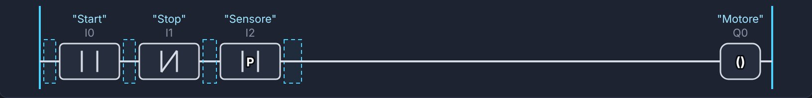
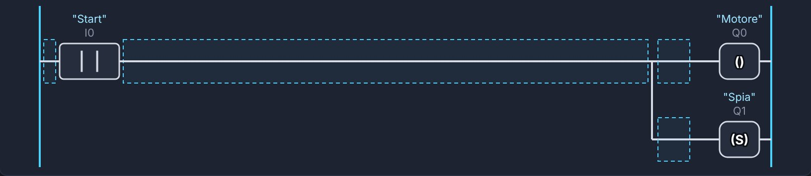
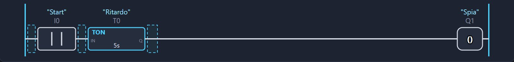
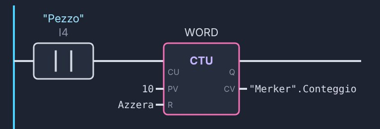
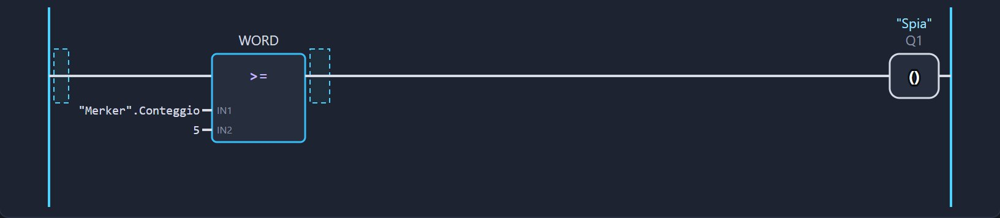
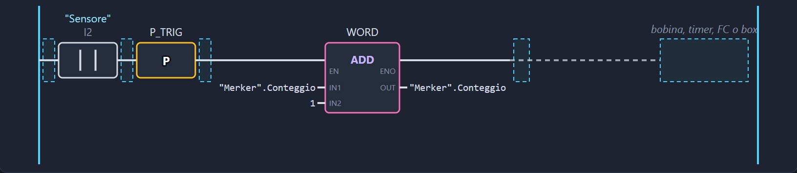
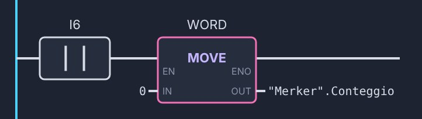
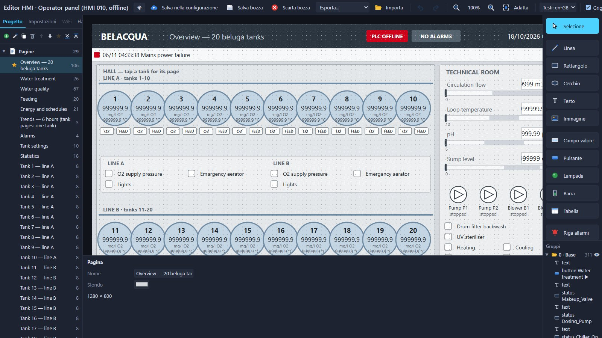
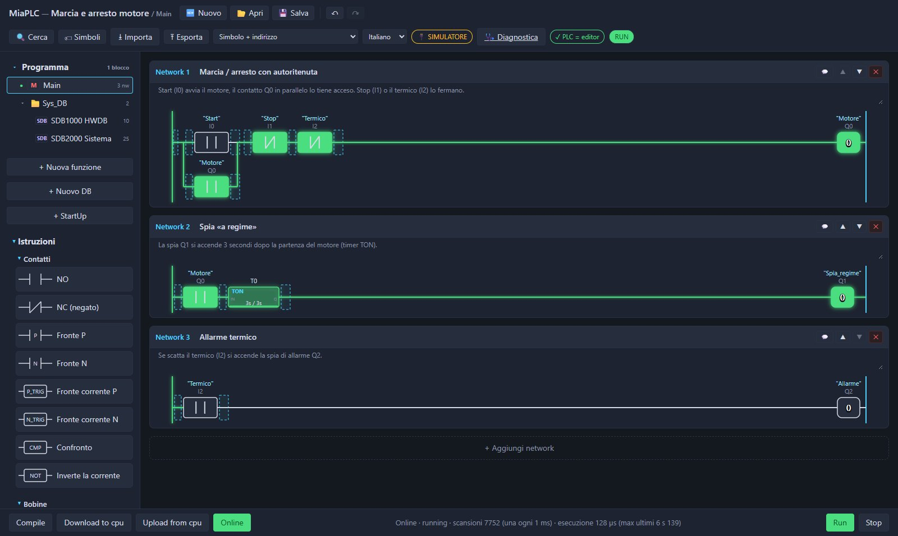

Wiki di MIAplc
Cos'è MIAplc
MIAplc (Micro Integrated Automation Programmable Logic Controller) è un PLC costruito su microcontrollori ESP32. Tre pezzi lavorano insieme:
- la scheda: un ESP32 con ingressi, uscite e una rete (Ethernet, WiFi o tutte e due, secondo la scheda);
- il firmware: esegue il programma in una macchina virtuale a bytecode, ciclo dopo ciclo, e gestisce rete, I/O, orologio, sicurezza e diagnostica;
- l'editor web: sta dentro il PLC. Lo apri dal browser con l'indirizzo della scheda e programmi in ladder. Si può aprire anche dal PC e collegarsi via cavo USB.
Il modo di lavorare è quello dei PLC industriali: scrivi il programma, Compile, Download to cpu, Run, poi Online per vederlo lavorare. Intorno ci sono gli altri programmi: MiaConfig per preparare schede e firmware su misura, i moduli I/O remoti µLink e il pannello HMI.
Primi passi
Ci sono due strade. Con una scheda che ha già il firmware MIAplc parti subito: accendi, apri l'editor e programmi. MiaConfig serve solo nella strada avanzata: schede elettroniche custom e progetti avanzati, quando ti prepari da solo un firmware su misura.
Scheda pronta, firmware già caricato
- Accendi la scheda. Il firmware è già dentro: ingressi, uscite e rete sono pronti.
- Collegati. Con il cavo Ethernet la scheda di fabbrica ha l'indirizzo fisso
192.168.0.10: il PC deve stare nella rete 192.168.0.x. Le schede senza Ethernet aprono invece la loro rete WiFimiaplc-XXXX(le ultime cifre vengono dal chip) con l'indirizzo10.10.10.1. - Apri l'editor. Nel browser apri l'indirizzo della scheda, ad esempio
http://192.168.0.10. L'editor sta dentro il PLC: niente da installare. - Entra. La prima volta imposti la password di amministratore usando la password di recupero della scheda (vale nei primi 10 minuti dopo l'accensione). Poi entri con la tua password.
- Scrivi il primo network, poi Compile → Download to cpu → Run → Online.
Non serve MiaConfig. Gli aggiornamenti del firmware si fanno dall'editor, con il pacchetto .miaplc.fw.
Configuri tu la scheda con MiaConfig
Per schede elettroniche custom e progetti avanzati: scegli tu chip, pin, moduli e comunicazioni, e compili un firmware su misura per le tue esigenze.
- Scegli la scheda. Una delle schede di riferimento o la tua (vedi Schede e MiaConfig).
- Prepara il firmware con MiaConfig. Disegni la scheda (ingressi, uscite, Ethernet, orologio, µLink, pannello), poi Genera → Compila firmware. La prima volta scarica gli strumenti di compilazione (serve internet e circa 1 GB di disco), poi compila e basta.
- Carica il firmware. La prima volta via USB, dopo dall'editor con il pacchetto
.miaplc.fw. MiaConfig imposta anche le password della scheda. - Programma come nella strada base: editor nel browser, Compile, Download, Run, Online.
Manuale: hardware con MiaConfig, passo per passo · Guida completa di MiaConfig
Non hai ancora una scheda? Parti dal simulatore: è lo stesso editor, con un PLC simulato nel browser.
Il simulatore
Il simulatore è l'editor vero con un PLC simulato al posto della scheda. La macchina virtuale simulata segue le stesse regole del firmware: un programma che funziona nel simulatore funziona anche sulla scheda.
- Nel riquadro MOCK PLC fai clic sugli ingressi
I0…I5per accenderli e spegnerli; le usciteQ0…Q3si colorano quando sono attive. - RUN / STOP / Reboot fanno come i comandi dell'editor e il riavvio della scheda; Errore e Offline simulano un guasto e la perdita di collegamento.
- Il simulatore fa una scansione ogni 10 ms e al massimo 10000 istruzioni per scansione. Sulla scheda il ciclo può scendere a 1 ms e il limite è il tempo (il controllo del ciclo), non il numero di istruzioni. I tempi veri si misurano sul PLC.
- Programma e stato restano salvati nel browser; Reset mock cancella tutto.
Il ciclo di scansione
Come ogni PLC, MIAplc ripete sempre lo stesso giro:
- legge gli ingressi della scheda e dei moduli µLink;
- esegue il programma dall'inizio alla fine (Main e le FC che chiama);
- scrive le uscite e le manda ai moduli.
Il programma quindi non “aspetta”: ogni network viene rivalutato a ogni giro. I timer contano il tempo tra un giro e l'altro, i fronti ricordano lo stato del giro prima.
- Il tempo di ciclo impostato (1 ms) è un minimo: con un programma lungo il giro si allunga.
- Il controllo del ciclo (150 ms di default, da 10 a 1000 ms in MiaConfig) è il tempo massimo di una scansione: oltre, il PLC va in STOP per errore con le uscite spente.
- Sui chip a due core il PLC ha una CPU tutta sua; sui chip a un core (C3) dopo ogni giro il sistema (rete, editor, USB) ha al massimo 2 ms.
- Le scritture dall'esterno (Online, pannello, esposizione dati, Modbus) entrano tra due scansioni, mai a metà.
- Tempo di scansione, ciclo e carico della CPU si leggono nella Diagnostica e nel DB di sistema.
Blocchi: Main, StartUp, FC, DB
| Blocco | A cosa serve |
|---|---|
| Main | Il programma principale, eseguito a ogni scansione. |
| StartUp | Una scansione al posto del Main a ogni passaggio in RUN: accensione in RUN, da STOP a RUN, dopo un errore e dopo un Download completo. Legge gli ingressi e scrive le uscite: serve per valori iniziali e azzeramenti. |
| FC (funzione) | Un pezzo di programma riutilizzabile con la sua interfaccia (IN, OUT, IN_OUT, TEMP). Numeri da 1 a 1023; si chiama dal Main, dallo StartUp o da altre FC, fino a 8 livelli. |
| FC con memoria (FB) | Una FC con almeno una variabile STATIC: ogni chiamata ha il suo DB d'istanza (DB 3000…3999, creato dall'editor) e ricorda i valori da un giro all'altro. |
| DB (blocco dati) | Variabili con nome e tipo, anche strutture e array. Numeri da 1 a 65535. Un DB può essere ritentivo: vedi Memoria ritentiva. |
| DB di sistema | Scritti dal PLC, in sola lettura: DB 1000 (hardware della scheda e tabelle I/O), DB 1100 (Modbus), DB 2000 «Sistema» (tempi, RAM, rete…), DB 1001 e successivi per i moduli µLink. |
Ogni blocco è diviso in network, ognuno con titolo e commento. I blocchi si possono raccogliere in cartelle. Un programma ha al massimo 256 blocchi; i dati locali di una FC arrivano a 1024 byte.
Memoria ritentiva
Restano allo spegnimento solo i DB marcati ritentivi. Merker M, timer T e uscite ripartono da zero a ogni accensione.
I DB ritentivi si salvano in flash:
- a ogni STOP dall'editor;
- a ogni riavvio pulito (dall'editor o da MiaConfig);
- quando manca la tensione, se la scheda ha l'ingresso Mancanza tensione (si aggiunge in MiaConfig, con un condensatore che tiene acceso il chip il tempo di salvare).
Senza l'ingresso di mancanza tensione, uno spegnimento brusco in RUN perde le modifiche fatte dopo l'ultimo salvataggio: per una macchina vera conviene sempre prevederlo.
Al Download, i campi con lo stesso nome e lo stesso tipo tengono il loro valore. Spazio per i DB ritentivi: 8 KB su ESP32, C3 e S3, 64 KB sul P4.
Aree e indirizzi
| Area | Indirizzi | Cosa contiene |
|---|---|---|
I | I0 … I1023 | Ingressi digitali (sola lettura). Quelli della scheda dall'inizio, quelli dei moduli µLink da I64 in su (64 bit per modulo). |
Q | Q0 … Q1023 | Uscite digitali, con la stessa divisione. |
M | M0 … M1023 | Merker: bit di memoria interni, azzerati a ogni accensione. |
T | T0 … T255 | Timer: il contatto T5 è l'uscita del timer 5. |
SM | SM0 … SM5 | Bit di sistema (sola lettura, vedi sotto). |
DB | es. "Impianto".livello | Variabili dei blocchi dati, per nome. Si può usare anche un bit di un campo intero: "Dati".stato.3. |
Byte, parole e doppie parole di memoria (MB, MW, MD…) non sono più aree del PLC: se un progetto le usa, l'editor le sposta da solo in un DB ritentivo «Merker»
(MW3 diventa "Merker".MW3, MW3.5 il suo bit 5).
Bit di sistema
| Bit | Significato |
|---|---|
| SM0 | 1 nello StartUp e nel primo Main dopo ogni passaggio in RUN |
| SM1 | sempre 1 |
| SM2 | sempre 0 |
| SM3 | clock 10 Hz (periodo 100 ms) |
| SM4 | clock 2 Hz (500 ms) |
| SM5 | clock 1 Hz (1 s) |
I clock cambiano da una scansione all'altra. Tempi, RAM e stato della rete sono nel DB di sistema.
A ogni indirizzo puoi dare un simbolo (nome e commento) nella tabella dei simboli: nel ladder vedrai "Start" sopra I0.
Tipi di dato
| Tipo | Campo |
|---|---|
| BOOL | 0 / 1 |
| BYTE · USINT | 0 … 255 |
| SINT | −128 … 127 |
| WORD · UINT | 0 … 65535 |
| INT | −32768 … 32767 |
| DINT | 32 bit con segno |
| UDINT | 32 bit senza segno |
| REAL | virgola mobile 32 bit |
| TIME | tempo in ms (circa ±24 giorni), si scrive T#5s, T#1m30s, T#250ms, T#2h, T#1d |
| TIMER | un timer con lo stato in una variabile (campi PT, ET, IN, Q): non usa i T0…T255 e, in un DB ritentivo, sopravvive allo spegnimento |
- Strutture: tipi tuoi con campi semplici e timer, da usare nei DB e nelle interfacce (es.
"Dati".motore.velocita). - Array
[min..max]: fino a 4096 elementi, non di BOOL né di strutture. Un elemento con indice si usa nelle FC in ST e C; un indice fuori dai limiti manda il PLC in STOP con errore. - Non ci sono stringhe né tipi a 64 bit.
Istruzioni ladder
| Gruppo | Istruzioni |
|---|---|
| Contatti | NO, NC, fronte P / N di un operando, fronte della corrente P_TRIG / N_TRIG, NOT, confronto (== <> < > <= >=) |
| Bobine | bobina, bobina negata, SET, RESET, fine FC (RET) |
| Timer | TON ritardo all'eccitazione, TOF ritardo alla diseccitazione, TP impulso: su T0…T255 o su una variabile TIMER |
| Contatori | CTU avanti, CTD indietro, CTUD avanti e indietro (il valore CV è una variabile intera di un DB) |
| Numeri | MOVE, ADD, SUB, MUL, DIV, MOD, NEG, ABS, MIN, MAX, LIMIT, CONV, SQRT, SQR (solo REAL), SCALE (es. 0…27648 → 0…100 %) |
| Parole | AND, OR, XOR, INV, SHL, SHR, ROL, ROR, SWAP (solo interi) |
| Funzioni | chiamata di una FC, con i suoi parametri; funzioni di sistema Modbus |
I box numerici hanno EN / ENO. Un overflow non ferma il PLC: il risultato ricomincia e ENO va a 0. Una divisione per zero lascia il risultato com'era, mette ENO a 0 e accende SF con una voce nella Diagnostica. Anche LIMIT con minimo maggiore del massimo e SCALE con l'ingresso fuori campo mettono ENO a 0.
Come appaiono nel ladder







Le immagini vengono dall'editor. Il dettaglio di ogni istruzione è nella guida dell'editor. Passo per passo: crea i progetti di esempio.
FC in ST e in C
Una funzione si può scrivere anche in testo: ST (Structured Text) o C. Main e StartUp restano in ladder. Utile per calcoli, cicli e ricette, mentre la logica a contatti resta in ladder.
| ST | C | |
|---|---|---|
| Condizioni | IF … THEN … ELSIF … ELSE … END_IF, CASE … OF 1: …; 2, 5..7: … ELSE … END_CASE | if / else, switch / case / default (ogni case finisce con break;) |
| Cicli | FOR … TO … BY … DO … END_FOR, WHILE … DO … END_WHILE, REPEAT … UNTIL … END_REPEAT, EXIT, CONTINUE | for, while, do … while, break, continue, ++ -- += -= |
| Operatori | AND OR XOR NOT, = <>, MOD | && || ^ !, == !=, %, & | bit a bit |
| Operandi | #nome (interfaccia; in C senza #), "DB".campo, I5, Q0, M100, T5, SM0, nome[i], simboli "Nome"; costanti 16#FF, 2#1010, 1.5, TRUE, T#5s; commenti // e (* *) | |
IF #avvio AND NOT #stop THEN
#output := TRUE;
ELSIF #stop THEN
#output := FALSE;
END_IF;
Il completamento automatico propone variabili, campi dei DB e simboli. Dal testo non si chiamano altre FC né timer e contatori: quelli si fanno in ladder. Un ciclo senza fine non blocca la scheda: il controllo del ciclo manda il PLC in STOP e la Diagnostica mostra il punto del programma.
RUN, STOP ed errori
- Stati del PLC: RUN, STOP, errore e «nessun programma». In STOP e in errore le uscite sono spente.
- RUN e STOP arrivano dall'editor (rete o USB): la scheda non ha un selettore. All'accensione vale l'impostazione «Al riavvio» di MiaConfig: «ultimo stato» o «sempre RUN».
- Dall'errore si esce con RUN; se la causa c'è ancora, il PLC torna in errore.
- Il Download con il PLC in RUN manda solo i blocchi cambiati e li scambia tra due scansioni; se la memoria non basta serve STOP e un Download completo.
Cosa manda il PLC in STOP
- Una scansione più lunga del controllo del ciclo, ingressi non riletti, indice di array fuori campo, programma non valido.
- Un modulo µLink perso, se l'impostazione dei moduli lo prevede.
- Tabelle I/O fatte per un'altra scheda (il RUN viene rifiutato).
- Un errore grave del firmware: la scheda si riavvia e il PLC riparte in STOP con un avviso.
SF: errore di sistema
SF è il “LED rosso” che l'editor mostra: c'è un problema, ma il PLC continua a lavorare. Resta acceso finché c'è la causa; i dettagli sono nella Diagnostica (controlli all'avvio e log).
| Esempi di cause |
|---|
| Impostazioni non valide, ritentiva non leggibile, poca RAM, dispositivo I2C o SPI mancante, rete usata dal programma assente dopo il tempo concesso, divisione per zero nel programma, access point con la password di fabbrica, rete di fabbrica ripristinata, impostazioni o firmware precedenti ripristinati, punto I/O mancante, modulo µLink non raggiungibile |
Protezione dagli errori del firmware
Le impostazioni in uso diventano “buone” dopo un'ora (due minuti con un editor collegato). Dopo 3 errori gravi di fila subito dopo l'accensione tornano le ultime impostazioni buone; dopo altri 3 la scheda riparte con il firmware precedente. Un modulo del firmware che non parte (es. un chip I2C che manca) non blocca la scheda: diventa un avviso o un SF.
Online e diagnostica
- Online: i contatti chiusi e le bobine eccitate diventano verdi, i timer mostrano tempo trascorso / preimpostato, i box mostrano i valori. Un clic su un campo di DB o su un merker ne cambia il valore (non è una forzatura: il programma può riscriverlo).
- Diagnostica, a tre livelli Base, Avanzato e Debug: stato del PLC, versioni, log degli eventi, tempi di scansione, carico delle CPU, analisi della RAM, controlli all'avvio, moduli I/O µLink, rete, accesso (sessioni, password, registro degli accessi), aggiornamento del firmware, backup e ripristino.
- Il log registra avvii (con il motivo del reset), RUN e STOP con chi li ha chiesti, errori, rete, moduli persi e tornati, mancanza tensione. Le voci hanno la data appena l'ora è nota.

DB di sistema «Sistema» (DB 2000)
Scritto dal PLC prima di ogni scansione, in sola lettura. Si usa nel programma come gli altri DB, ad esempio "Sistema".scan_us.
| Campo | Tipo | Significato |
|---|---|---|
| tick_us, tick_ms, uptime_s | UDINT | µs (ricomincia dopo circa 71 minuti), ms e secondi dall'accensione |
| unix | UDINT | ora UTC in secondi dal 1970 (0 = non nota) |
| scan_us, scan_max_us | UDINT | esecuzione della scansione prima e massimo degli ultimi 6 s (µs) |
| cycle_us, scan_count | UDINT | ciclo da una scrittura delle uscite alla successiva (µs), scansioni dall'avvio |
| heap_free, heap_min | UDINT | RAM libera e minimo dall'accensione (byte) |
| cpu0, cpu1 | REAL | carico della CPU 0 (rete e USB) e della CPU 1 (PLC), % |
| rssi | INT | segnale WiFi verso il router (dBm, 0 = non collegato) |
| editors, load | BYTE | editor collegati negli ultimi 10 s, tempo del programma nell'ultimo secondo (%) |
| ulink_ok, ulink_n | BYTE | moduli µLink in RUN (bit n = modulo n) e moduli impostati |
| eth, wifi, ap, hmi, sf, first_scan | BOOL | Ethernet collegata, WiFi al router, access point aperto, pannello collegato, SF acceso, primo giro |
Memoria e limiti
| ESP32, S3, C3 | ESP32-P4 | |
|---|---|---|
| Codice del programma | fino a 100 KB | fino a 8 MB |
| Memoria di lavoro (RAM per il codice) | fino a 40000 byte, secondo la RAM libera (sul C3 circa 11 KB) | da 50 KB fino a 8 MB in PSRAM |
| Con il WiFi acceso | la memoria di lavoro scende a 12 KB: il WiFi usa molta RAM | |
| Tutti i DB insieme | 8 KB | 2 MB (un DB al più 32 KB) |
| DB ritentivi | 8 KB | 64 KB |
| Blocchi, livelli di chiamata, I/Q/M, timer | 256 blocchi, 8 livelli, 1024 bit per area, 256 timer T | |
MiaConfig mostra la memoria della configurazione scelta e può misurarla su una scheda vera. Se il programma non entra, il Download viene rifiutato con un messaggio chiaro.
Schede e MiaConfig
MiaConfig è per le schede custom e i progetti avanzati. Con una scheda che ha già il firmware MIAplc non serve: vedi la strada base nei Primi passi.
MiaConfig è il configuratore: descrivi la scheda (ingressi, uscite, Ethernet, WiFi, orologio, dispositivi I2C/SPI) e lui sceglie i moduli del firmware e lo compila. Funziona su Windows, Linux e macOS e non installa nulla nel sistema: tutto resta nella sua cartella. La guida completa è in Guida dei programmi → MiaConfig.
| Chip | Schede di riferimento |
|---|---|
| ESP32 | Olimex ESP32-EVB, Ethernet LAN8720 (con o senza orologio DS3231) |
| ESP32-C3 | ESP32-C3 Super Mini: solo WiFi, oppure Ethernet W5100 (anche con DS3231 e µLink) o W5500 |
| ESP32-S3 | ESP32-S3-DevKitC-1 (WiFi) |
| ESP32-P4 | Waveshare ESP32-P4-ETH (Ethernet IP101) e pannello HMI |
| ESP32-C6 | Si può configurare, non ancora provato su una scheda |
Chip Ethernet: W5100 e W5500 (SPI, su ogni chip), LAN8720 e IP101 (RMII, su ESP32 e P4). Il W5100 porta insieme rete e µLink.

Manuale: configurare l'hardware degli esempi con MiaConfig, dal progetto al cablaggio.
Rete
| Interfaccia | Valori di fabbrica |
|---|---|
| Ethernet | IP fisso 192.168.0.10, maschera 255.255.255.0, gateway e DNS 192.168.0.1 (oppure DHCP, da impostare) |
| Access point WiFi del PLC | rete miaplc-XXXX, IP 10.10.10.1 con DHCP per chi si collega, canale 6, fino a 8 dispositivi. Si chiude da solo quando il PLC è collegato al router. |
| WiFi verso il router | DHCP o IP fisso; ricorda fino a 5 reti; se il router non risponde si ricollega da solo. |
- Di fabbrica il WiFi è acceso solo sulle schede senza Ethernet. Si cambia dall'editor (Diagnostica → Rete) o in MiaConfig; le impostazioni di rete valgono dal riavvio.
- Il nome del PLC (di fabbrica
uplc, fino a 24 caratteri) è anche il suo nome DHCP. - Tornare alla rete di fabbrica: accendi la scheda 3 volte di fila, spegnendola ogni volta entro 10 secondi.
- Da quali reti si apre l'editor si sceglie in MiaConfig: tutte, solo Ethernet o solo WiFi.
- MiaConfig trova i PLC in rete (UDP 5052) e può cambiarne l'indirizzo anche se sono in un'altra rete del PC.
- Con WiFi ed Ethernet tutte e due spente, l'editor funziona solo via cavo USB.
Password e sicurezza
- Per entrare dalla rete nell'editor del PLC e del pannello serve la password di amministratore: almeno 10 caratteri con maiuscola, minuscola, numero e carattere speciale.
- Il login è a sfida (la password non viaggia in rete) e ogni richiesta è firmata. Sul PLC c'è solo un'impronta della password, mai la password.
- Una scheda nuova si apre con la password di recupero creata da MiaConfig, valida nei primi 10 minuti dopo l'accensione e solo per scegliere la password di amministratore. Serve anche se dimentichi la password.
- Le sessioni scadono dopo 30 minuti senza richieste e comunque dopo 12 ore; al massimo 4 insieme (2 sul C3). Dopo 5 password sbagliate l'attesa raddoppia fino a 5 minuti.
- Il cavo USB è accesso fisico: non chiede password.
- I moduli µLink parlano con il PLC con messaggi firmati (CMAC-AES), con una chiave per ogni modulo.
- Il Modbus TCP non ha password, come in tutti i PLC: PLC, moduli e pannelli vanno tenuti in una rete protetta, mai direttamente su internet.
Aggiornare, backup, ripristino
- Aggiornare il firmware: dall'editor con il pacchetto
.miaplc.fw, con il PLC in STOP. Il firmware nuovo va nella seconda metà della flash e diventa quello d'avvio solo se è integro; impostazioni, simboli, log e programma restano. Se un pacchetto cambia le partizioni serve il caricamento via USB. - Backup dalla Diagnostica: un file
.miaplc.bkp(.miaulink.bkpper un modulo µLink) con firmware, file dell'editor, impostazioni, simboli, programma e valori dei DB. Le password WiFi non ci sono: su una scheda nuova quella del router va riscritta. - Ripristino: sullo stesso PLC dall'editor, su una scheda nuova con il recupero via USB.
- Prima installazione e recupero: via USB, con il file
-completo.bindi MiaConfig o con il recupero dell'editor aperto dal PC.
Orologio
Il PLC prende l'ora, nell'ordine, da un orologio DS3231 con batteria (se la scheda lo ha), da internet (NTP) appena ha una rete, oppure dal PC quando apri l'editor.
L'ora è tenuta in UTC e l'editor la mostra con il fuso del PC. Nel programma si legge in "Sistema".unix (0 = ora non nota).
µLink: I/O remoti
µLink collega al PLC dei moduli di ingressi e uscite sul cavo Ethernet. Lavora direttamente sui frame Ethernet, senza indirizzi IP: funziona attraverso gli switch ma non attraverso i router, e non sul WiFi.
- Il PLC scambia uscite e ingressi con ogni modulo ogni 15 ms, senza mai fermare la scansione ad aspettarli.
- Fino a 8 moduli (64 sul P4). Ogni modulo occupa 64 ingressi e 64 uscite da I64 / Q64 in su, più valori analogici REAL (da 0.0 a 1.0 del campo, la scala la fa il programma), e ha la sua DB nel programma.
- Abbinamento: dalla Diagnostica («Cerca dispositivi», abbina, salva) oppure da MiaConfig con il preabbinamento: il PLC trova e abbina da solo i suoi moduli, anche in RUN.
- Se un modulo smette di rispondere (300 ms): le sue uscite si spengono, nel PLC si accende SF e il log lo registra. Poi, secondo l'impostazione: riparte da solo quando torna (di fabbrica), aspetta un «Riarma», tiene il PLC in STOP finché manca, o lo manda in STOP subito.
- Un modulo può essere un ESP32 con il firmware MIAplc in ruolo «Modulo I/O» (ha la sua pagina web e il suo aggiornamento), oppure un Arduino Uno con shield Ethernet W5100 o W5500 e la libreria MiauLink (fino a 14 punti digitali e 6 analogici). Lo sketch Arduino non è ancora stato provato su una scheda.
Modbus TCP ed esposizione dati
- Modbus TCP master e slave (porta 502, funzioni 1, 2, 3, 4, 5, 6, 15, 16). Dispositivi e registri si impostano nell'editor; i dati stanno nella DB 1100 «Modbus», con esito, pronto e richiesta per ogni lettura e scrittura. Il master lavora solo in RUN, lo slave risponde anche in STOP. Modbus RTU su seriale non c'è ancora.
- Esposizione dati: un altro programma legge e scrive valori del PLC in JSON (
/api/data/exposure), fino a 256 valori per richiesta; si scrivono solo merker e campi di DB scelti. Dalla rete serve il login con richieste firmate, come per l'editor.
Pannello HMI
MiaHmi è il firmware per un pannello touch da 10,1" su ESP32-P4, con Ethernet, WiFi (modulo ESP32-C6), microSD e porta USB. Mostra e comanda i valori del PLC, gestisce allarmi e grafici. Il PLC gli manda le voci scelte nel modulo Dati HMI dell'editor (fino a 256, aggiornate ogni 250–1000 ms). Il firmware si prepara con MiaConfig; le pagine si disegnano nell'editor del pannello, spiegato in Guida dei programmi → Editor MiaHMI.

Guida dei programmi
Tutto quello che fanno i tre programmi, voce per voce. Apri la tendina che ti serve, oppure cerca una parola: si aprono solo le parti che la contengono.
MiaConfig Il configuratore delle schede · hardware e firmware su misura
MiaConfig disegna l'hardware di una scheda (chip, moduli, pin), controlla che tutto torni, compila il firmware ESP-IDF sul tuo PC e lo carica, via USB o via rete. Gestisce anche un impianto intero: PLC, moduli I/O µLink e pannelli, caricati tutti insieme. Serve per le schede custom e i progetti avanzati: con una scheda che ha già il firmware MIAplc non serve. Il programma del PLC non si scrive qui ma nell'editor MIAplc.
Installare e avviare
Sistemi e requisiti
- Windows, Linux e macOS. Pacchetti pronti:
MiaConfig-<versione>-windows.zip,-linux.tar.gz,-macos.zip. - Linux: servono
python3convenve le librerie Qt del desktop (su Debian e Ubuntu anchelibxcb-cursor0). - macOS: serve
python3(Xcode Command Line Tools). Il programma non è firmato: la prima volta tasto destro → Apri. - Dai sorgenti: Python 3.10 o più recente.
- Non installa nulla nel sistema: tutto resta nella sua cartella (Python, ESP-IDF, compilatori, progetti, uscite).
Primo avvio
- Pacchetto: scompatta e avvia MiaConfig (su macOS
MiaConfig.app). - Dai sorgenti su Windows: doppio clic su
avvia.bat. La prima volta prepara la cartella.venvcon Python e PySide6 (serve internet): «Preparo l'ambiente Python in .venv (solo la prima volta)...». Se non riesce: serve Python 3.10 o più recente; cancella.venve riprova. - La finestra ricorda dimensione, posizione, la configurazione aperta, il dispositivo e anche il progetto non ancora salvato.
Cosa scarica la prima compilazione
- ESP-IDF v5.5.6, i compilatori del chip e (su Windows) un Python portatile, nella cartella
pacchetti: circa 1 GB su disco. Serve internet solo questa volta. - I compilatori di ogni chip si scaricano la prima volta che compili per quel chip.
- I sorgenti del firmware (MiaPlc-idf, MiauLink, MiaHmi-idf, MiaComponents) nella cartella
firmware. - Un download interrotto riparte la volta dopo; ogni download prova 3 volte. Dietro un proxy aziendale vale la variabile
SSL_CERT_FILE. - Per ripartire da zero: cancella
pacchetti,firmware,progettio.venv.
Riga di comando
| Comando | Cosa fa |
|---|---|
miaconfig controlla scheda.mia | Solo i controlli. Esce con 0 se non ci sono gravi, con 1 se ci sono. |
miaconfig genera scheda.mia cartella | Scrive i file di configurazione del firmware. |
miaconfig compila scheda.mia | Configurazione, ESP-IDF, compilazione e pacchetti in uscita/<scheda>/. |
miaconfig --version | La versione. |
Su Windows dai sorgenti: avvia.bat compila esempi\plc-c3.mia. I messaggi escono con ERRORE: (grave), ATTENZIONE: (avviso), nota: (info).
La finestra
Menu
| Menu | Voci |
|---|---|
| File | «Nuova configurazione…» (Ctrl+N), «Apri configurazione…» (Ctrl+O), «Chiudi configurazione», «Importa dal PLC…», «Salva» (Ctrl+S), «Salva con nome…» (Ctrl+Maiusc+S), «Esci» (Ctrl+Q) |
| Modifica | «Annulla» (Ctrl+Z), «Ripeti» (Ctrl+Y o Ctrl+Maiusc+Z): fino a 200 passi, per ogni progetto aperto |
| Visualizza | «Rete (ricerca dispositivi)» (Ctrl+R); le viste «Pinout» (Ctrl+1), «Mappa I/O» (Ctrl+2), «Progetto» (Ctrl+3), «Memoria» (Ctrl+4), «Controlli» (Ctrl+5), «Genera» (Ctrl+6), «Seriale» (Ctrl+7) |
| Aiuto | «Informazioni su MiaConfig» |
Barra in alto
- «◂ Configurazione»: torna alla pagina della configurazione (anche con un clic sul nome in cima all'albero).
- Il percorso: configurazione ▸ dispositivo aperto.
- I contatori dei controlli: «N gravi» (rosso se più di 0: il firmware non si compila), «N avvisi» (giallo: da controllare), «N info» (da sapere). Un clic apre la vista Controlli.
- «↶» annulla, «↷» ripeti, poi «Nuova», «Apri», «Salva», «Importa dal PLC».
- Nel titolo della finestra il pallino «●» vuol dire modifiche non salvate.
Le colonne
- Albero della configurazione: i dispositivi dell'impianto, disegnati come un ladder (barra di alimentazione a sinistra, ogni PLC su un segmento, i suoi moduli e pannelli sotto).
- Viste e moduli: i pulsanti delle viste, poi i moduli del progetto divisi per gruppo (Sistema, Comunicazioni, Bus, Dispositivi, I/O, HMI, Dispositivi I/O). Il pallino di ogni modulo è rosso con un grave, giallo con un avviso, verde se è a posto. In fondo la tendina «Aggiungi modulo».
- Vista centrale: la vista scelta.
- Impostazioni (solo nel Pinout): impostazioni e pin del modulo scelto. Si allarga trascinando il bordo sinistro.
Chiudere
Con modifiche non salvate MiaConfig chiede conferma (il progetto resta comunque alla prossima apertura). Con lavori in corso (compilazione, caricamento, Misura, monitor seriale) avvisa che si interrompono. Se sta scrivendo la flash di una scheda, interrompere può lasciarla scritta a metà: si rimedia ricaricando via USB.
La configurazione: un impianto con più schede
Cos'è e come è fatta su disco
Una configurazione raggruppa le schede di un lavoro: PLC, moduli I/O µLink, pannelli HMI. Ogni dispositivo ha la sua cartella:
stazione_pompaggio/
stazione_pompaggio.mia la configurazione
access.miapwd credenziali delle schede (cifrate)
stazione_pompaggio_plc_001/
stazione_pompaggio_plc_001.mia hardware del PLC
stazione_pompaggio_plc_001.miaplc programma del PLC
stazione_pompaggio_io_002/ … modulo I/O
stazione_pompaggio_hmi_003/ … .miahmi pannello
I file dei dispositivi sono progetti MiaConfig normali: si aprono anche da soli.
Nuova configurazione e apertura
- Dalla pagina di apertura: scrivi il nome (es. «Stazione di pompaggio») e premi «Nuova configurazione…», poi scegli dove creare la cartella.
- «Apri configurazione…» apre un
.miadi configurazione. Se apri il.miadi una scheda sola, MiaConfig crea accanto<nome>-configurazione.miacon quella scheda e la apre. - Si aprono anche i vecchi
.hwplce le impostazioni salvate da un PLC (.json). - All'apertura di una configurazione senza password di amministratore MiaConfig la chiede (vedi Accesso alle schede).
La pagina della configurazione
- «Descrizione della configurazione»: testo libero.
- Tabella «Dispositivi»: «Nome», «Tipo» (PLC 001, I/O 002, HMI 003), «Indirizzo» (IP fisso o DHCP), «PLC» (a quale PLC appartiene un modulo o un pannello, oppure «nessun PLC (standalone)»), «Nome uLink», «Cartella», «Commento». Nome, commento e nome uLink si scrivono direttamente in tabella; doppio clic apre il dispositivo.
- Pulsanti «Nuovo dispositivo…», «Apri hardware», «Duplica» (copia hardware e programma o progetto, con numero e indirizzo successivi), «Togli» (toglie dalla configurazione ma non cancella la cartella), «▲», «▼».
- Sotto, i controlli fra dispositivi; se è tutto a posto: «Schede coerenti: indirizzi unici, uLink, PLC dei pannelli e tabelle I/O dei programmi a posto.»
- «Prepara la base del firmware in sottofondo», «Verifica compilazione», «Allinea le schede», «Compila tutto», «Carica tutto…», «Accesso alle schede…».
L'albero dei dispositivi
- Ogni riquadro mostra immagine, nome, codice e indirizzo («PLC 001 · 192.168.0.21»), per i moduli il nome uLink, il preabbinamento e lo stato della base del firmware. Nome rosso = grave, giallo = avviso.
- Clic: apre il dispositivo; clic di nuovo: torna alla configurazione.
- Tasto destro su un dispositivo: «Apri», «Editor del pannello (offline)» (pannelli), «Compila il firmware», «Rinomina…», «Duplica», «Togli dalla configurazione…», «Sposta su», «Sposta giù», «Identifica (LED o schermo)» (fa lampeggiare la scheda vera, se è già abbinata), «Nuovo dispositivo…».
- Tasto destro fuori dai dispositivi: «Nuovo dispositivo…», «Allinea le schede», «Carica tutto…», «Ricerca dispositivi», «Pagina della configurazione».
Nuovo dispositivo

- «Tipo»: «PLC», «Modulo I/O» o «Pannello HMI».
- «Nome», «Famiglia» del chip (il pannello solo ESP32-P4), «Modulo» (per ESP32 di default «ESP32-WROOM-32E / 32UE», quello dell'Olimex ESP32-EVB).
- Per moduli e pannelli: il «PLC» che li comanda.
- «Aggiungi»: il dispositivo si apre già pronto. PLC e moduli hanno Seriale editor, WiFi (se il chip ha la radio) e uLink; con l'Olimex ESP32-EVB anche l'Ethernet LAN8720 con i suoi pin. Il pannello parte con Ethernet IP101, schermo JD9365 da 10,1" e touch GT911.
- Indirizzi proposti: dal 192.168.0.21 in su per PLC e moduli, dal 192.168.0.20 in su per i pannelli.
Nome uLink, DB dei moduli e preabbinamento
- Ogni modulo I/O ha un nome uLink: lettere minuscole e cifre, al massimo 16, prima una lettera (es.
linea). È il suo nome in rete e il nome della sua DB nel programma. - Le DB dei moduli nel programma partono dalla 1001 (la 1000 è quella dell'hardware della scheda).
- Il preabbinamento è un codice di 8 cifre esadecimali uguale per un PLC e i suoi dispositivi: così il PLC riconosce da solo i suoi moduli e pannelli.
Allinea le schede
Scrive nelle schede quello che decide la configurazione:
- nei moduli I/O il ruolo «Modulo I/O» e il nome di rete uguale al nome uLink;
- nei PLC il ruolo «PLC» e il numero dei moduli;
- nei pannelli l'IP del loro PLC (vuoto se standalone);
- il preabbinamento in tutti;
- nel programma
.miaplcdel PLC le tabelle I/O con i punti della scheda e dei moduli e le DB dei moduli: il programma li vede prima ancora che esista l'hardware.
Il pulsante è attivo quando c'è almeno un avviso «da allineare». Il risultato elenca cosa ha cambiato, oppure «Niente da allineare.».
Chip e schede
Per ora MiaConfig mostra solo i chip e le schede che si possono provare sul banco.
| Famiglia | Moduli e chip | Note |
|---|---|---|
| ESP32 | ESP32-WROOM-32E / 32UE; chip su scheda D0WD-V3, D0WDRH2-V3, U4WDH, D0WDQ6-V3 | Ethernet RMII (LAN8720, IP101), DAC su GPIO 25 e 26, fino a 16 PWM |
| ESP32-S3 | ESP32-S3-WROOM-1 N8R8 / N16R8; chip S3, S3FN8, S3RH2, S3R8, S3R16V, S3FH4R2 | Ethernet solo SPI, USB nativa |
| ESP32-C3 | ESP32-C3 Super Mini; chip C3, C3FH4, C3FN4, C3FH8X, C3FH4X, C3FH4AZ | Un solo core, Ethernet SPI (W5100, W5500) |
| ESP32-C6 | chip su scheda C6, C6FH4, C6FH8 | Ethernet SPI |
| ESP32-P4 | ESP32-P4 + C6 PoE; chip P4NRW16X, P4NRW32X | Niente radio nel P4 (il WiFi è nel C6), Ethernet RMII, programmi grandi, unico chip dei pannelli |
Gli esempi di MiaConfig: Olimex ESP32-EVB (anche con orologio DS3231), ESP32-S3-DevKitC-1, ESP32-C3 Super Mini con W5100 o W5500, Waveshare ESP32-P4-ETH, pannello P4.
Cambiare famiglia porta il modulo al primo della nuova famiglia e toglie i moduli che il chip nuovo non ha.
Le viste
Pinout
- Il chip disegnato con i pin sui quattro lati; con un chip «su scheda» tutti i pad del package al loro posto.
- Colori: pin usato = colore del gruppo del modulo; pin riservato (es. flash) scuro con la sua funzione; bordo rosso = grave, giallo = avviso, bianco = pin del modulo scelto.
- Zoom con la rotella o due dita (fino a 6×), trascina per spostarti, doppio clic sullo sfondo per vedere di nuovo tutto il chip.
- Clic su un pin: le sue caratteristiche (riservato, solo ingresso, solo analogico, ADC, DAC, pin di avvio…), chi lo usa con «libera», i segnali ancora senza pin che possono andare lì (un clic li assegna) e «Riassegna…» per spostarci un segnale da un altro pin.
- Pannello a destra: impostazioni del modulo, tabella dei segnali («Segnale», «Dispositivo», «GPIO», «Commento» di 24 caratteri). La tendina GPIO offre solo i pin adatti. Segnale obbligatorio senza pin = rosso.
- «Assegna pin liberi»: sceglie da solo pin liberi, prima quelli senza avvertenze (evita pin di avvio, seriale, USB, ADC2 per gli analogici).
- «Esempio di collegamento» per «Mancanza tensione» e «Protezione reset USB»: disegno e componenti.
- La riga di memoria del modulo: quanta flash e RAM usa (stima).
Mappa I/O

- Tabelle «Ingressi», «Uscite», «Ingressi analogici», «Uscite PWM», «Uscite analogiche»: per ogni punto (I0, Q0, AI0, PWM0, AO0…) dove è collegato, GPIO e commento o il bit di uno shift register (es. «Shift register ingressi 0 · 0.3»). Punto senza pin = riga rossa.
- Con uLink in ruolo PLC: tabella dei moduli remoti, 64 ingressi digitali, 64 uscite digitali e 8 REAL per modulo.
- Le celle si copiano (Ctrl+C o tasto destro → «Copia») anche per incollarle in un foglio di calcolo.
Progetto: impostazioni della scheda
«Impostazioni»: «Base» o «Avanzate». In Base le impostazioni avanzate si vedono ma non si cambiano; tornando a Base tornano ai valori di default.
In Avanzate il file si salva come <nome>-<CRC>.mia e non si salva mai sopra un progetto Base.
| Campo | Cosa decide |
|---|---|
| Nome, Identificativo, Famiglia, Modulo, Chip, Flash | La scheda. L'identificativo diventa minuscolo con i trattini. |
| Misura | «misurato il <data>» o «non misurato» (vedi Memoria). |
| Nome di rete | Default uplc; 1–24 caratteri, minuscole, cifre e -. |
| Editor dalla rete | «da tutte le reti», «solo Ethernet», «solo WiFi». |
| Rete usata dal programma | «nessuna: il PLC non la aspetta», «Ethernet», «WiFi verso il router», «Ethernet o WiFi»; con una rete anche «Tempo concesso all'avvio s» (1–600, default 30): il PLC la aspetta all'avvio e scrive nel log se manca. |
| Avanzate | |
| Al riavvio | «ultimo stato» o «sempre RUN». |
| Controllo del ciclo ms | Default 150, da 10 a 1000. |
| Tempo massimo al sistema µs | Tempo per web server, USB e rete dopo ogni ciclo del PLC: 0 sui chip a due core, 2000 µs su quelli a un core. |
| Seriale USB | «solo editor» o «diagnostica avanzata». |
| Interprete | «VM standard», «VM accu»; sul P4 in modalità sviluppatore anche «VM codice macchina». |
| In STOP | «programma nella RAM» o «libera la RAM (il programma resta in flash)». |
| RAM per task, RAM minima: controllo ogni | Strumenti di diagnostica della memoria. |
| Modalità sviluppatore | Sblocca funzioni non da produzione (modulo Pannello HMI, WiFi per tutto, fino a 255 moduli uLink sul P4, VM codice macchina) e trasforma in avvisi gli errori di rischio crash. |
Memoria e Misura
- Senza misura: stima per chip e moduli di «Flash (partizione del programma)», «RAM statica», «RAM libera dopo l'avvio», «Memoria di lavoro PLC» e dei task (CPU, priorità, stack). Righe rosse: flash oltre il 95 %, RAM libera sotto 48 KB, memoria di lavoro sotto 16 KB.
- «Misura» prova la configurazione su una scheda vera collegata via USB: cancella il chip, carica un firmware di misura, la misura a riposo e sotto carico (programma di prova al 90 % della memoria in RUN, Online per 30 s, due Download, editor via USB e via le reti spuntate), poi rimette il firmware configurato senza programma. Dura circa 6 minuti.
- Il risultato: verdetto («sicura», «poco margine», «rischio di crash: la compilazione è bloccata»), RAM, tempo massimo al sistema consigliato, prove riuscite e con errori, stack e carico di ogni task, il ciclo del PLC disegnato fase per fase.
- Le misure valgono per tutte le configurazioni con la stessa combinazione (modulo, Ethernet, WiFi, orologio, uLink, Modbus…). «Importa misura» e «Visualizza misura» per quelle di un altro PC.
Controlli
Tutti i controlli del progetto, colorati per livello. Un clic su una riga seleziona il modulo e apre il Pinout. Senza problemi: «Nessun problema». Vedi Controlli.
Genera

- «Compila firmware» (spento se ci sono gravi), «Versione» del pacchetto, la porta (USB o PLC trovati in rete), «↻ Cerca», «Carica».
- «Salva file conf» (zip della configurazione del firmware) e «Salva configurazione PLC» (
<id>-impostazioni.json). - «Moduli del firmware»: quali parti entrano nel firmware (plc, eth, wifi, rtc, io, ulink, modbus, system, web, hmi, usb), scelte dall'hardware.
- Il log della compilazione (rosso errori, giallo avvisi, verde riuscita), poi i file prodotti con «Apri cartella» e, in basso, i file generati e il loro contenuto.
- Ogni dispositivo ha il suo lavoro: puoi compilare un pannello mentre un modulo carica, ma mai due lavori sulla stessa porta USB.
Seriale
- Il log della scheda dalla porta USB a 115200 baud, senza riavviarla. «▶ Apri» / «■ Chiudi», «Pulisci», «Salva log» (in
uscita/<id>/seriale-<data>.log). - Righe di errore in rosso, avvisi in giallo.
- Un blocco della scheda (Guru Meditation) si decodifica da solo con funzione, file e riga, usando il firmware dell'ultima compilazione del progetto.
- «Carica» sulla stessa porta chiude il monitor.
Ricerca dispositivi (rete)
- Visualizza → «Rete (ricerca dispositivi)» (Ctrl+R): le schede MIAplc che rispondono (UDP 5052, ogni 5 secondi), anche su un'altra rete del PC, perché si raggiungono per MAC.
- Colonne «Tipo», «Nome», «IP», «MAC», «Firmware», «Stato» (RUN, STOP, collegato al PLC…), «Vista da».
- Per ogni scheda: «Identifica» (LED per 5 s, sul pannello la luminosità), «Ping» (dice se la scheda c'è e se il firmware risponde), «Rete» (cambia nome, IP, maschera e gateway via MAC, anche se la scheda è su un'altra rete), «Web» (apre la sua pagina; con una scheda protetta MiaConfig entra con la chiave del progetto).
- Segnala schede che non rispondono, rispondono lente (oltre 500 ms) o hanno lo spazio dei file oltre l'80 %.
I moduli («Aggiungi modulo»)
La tendina in fondo all'elenco aggiunge i moduli. Il segno «⚠» vuol dire «non ancora segnato come provato su una scheda» o «non ancora nel firmware». Una voce è spenta se il chip non ha la periferica, se hai già il massimo o se serve la modalità sviluppatore. Provati su scheda: Ethernet (W5100, LAN8720), Orologio DS3231, Ingressi e Uscite digitali, Display JD9365, Touch GT911.
Sistema
| Modulo | A cosa serve, impostazioni |
|---|---|
| Seriale editor | Fisso. La seriale dell'editor; sui chip con USB nativa «Collegamento» UART0 o USB nativa. |
| Mancanza tensione | Un ingresso che avvisa quando manca l'alimentazione, per salvare la memoria ritentiva. «Attiva» bassa o alta. Con esempio di collegamento (divisore e condensatore da 2200 µF, oppure optoaccoppiatore PC817). |
| Protezione reset USB | Un'uscita che impedisce alla USB di resettare la scheda mentre è in RUN. «Livello che isola» 0 o 1, con esempio di collegamento. |
| HMI core | Solo pannelli, fisso: schermo (JD9365 10,1", EK79007 7", ILI9881C, RGB, SPI…) e touch (GT911, FT5x06, XPT2046), oppure «Senza schermo: solo via web server». |
Comunicazioni: WiFi

| Sezione | Campi e valori di default |
|---|---|
| Impostazioni di default | «WiFi»: «acceso se non c'è Ethernet» (default), «acceso», «spento». «Uso del WiFi»: «editor ed esposizione dati» (default), «solo editor», «solo esposizione dati». |
| Access point del PLC | «Nome rete» (vuoto = miaplc-XXXX dal chip), «Password» (8–63 caratteri), «IP» 10.10.10.1, «Canale» 6, «Con il router»: «si chiude quando è collegato» o «resta aperto». |
| Router | «Collegamento» «nessuno» o «a una rete»: nome, password (vuota = rete aperta), DHCP o IP fisso con maschera, gateway, DNS. |
Con l'accesso protetto la password dell'access point diventa una password WPA2 casuale per ogni scheda, creata da MiaConfig.
Comunicazioni: Ethernet
- «Chip»: W5100 e W5500 (SPI, su ogni chip), LAN8720 e IP101 (RMII, solo ESP32 e ESP32-P4). Altri chip sono nel catalogo ma non ancora nel firmware.
- SPI: «Bus» e i pin CS, INT (obbligatorio col W5500), RST. RMII: «Indirizzo PHY» e i pin dell'EMAC più MDC, MDIO, RST.
- «Priorità ricezione» (di fabbrica 17 con uLink, altrimenti 15).
- «Impostazioni di default»: Ethernet accesa o spenta; indirizzo fisso (default
192.168.0.10, maschera 255.255.255.0, gateway e DNS 192.168.0.1) o DHCP. - Il W5100 fa insieme TCP/IP e uLink.
Comunicazioni: uLink, Esposizione dati, Modbus, Pannello HMI
| Modulo | A cosa serve, impostazioni |
|---|---|
| uLink (I/O remoti) | Moduli I/O sul cavo Ethernet, con frame propri senza TCP/IP: serve l'Ethernet. «Ruolo» «PLC (comanda i moduli)» con «Moduli» da 1 a 8 (sul P4 fino a 64), oppure «Modulo I/O (comandato da un PLC)». Ogni modulo porta 64 ingressi, 64 uscite e 8 REAL. |
| Esposizione dati | I valori del PLC letti e scritti da un altro programma in rete (/api/data/). |
| Modbus | Fino a 4. «Tipo» RTU o TCP, «Ruolo» master o slave, «Porta» (default 502), «Indirizzo slave» 1–247. Oggi nel firmware c'è solo Modbus TCP, un master e uno slave al più; i registri del master si impostano nell'editor. |
| Pannello HMI | Solo in modalità sviluppatore: i dati verso il pannello (TCP 5050, grafico veloce UDP 5051), con «Anche via WiFi». |
Bus e dispositivi
| Modulo | A cosa serve, impostazioni |
|---|---|
| Bus SPI | «Clock MHz»: si porta da solo nel campo che va bene a tutti i dispositivi del bus. Pin SCK, MOSI, MISO. Se nessun clock va bene a tutti: metti i dispositivi lenti su un altro bus. |
| Bus I2C | «Clock kHz» 100, 400 o 1000; SDA, SCL. Due dispositivi con lo stesso indirizzo danno errore. |
| Orologio | RTC su I2C: nel firmware oggi c'è il DS3231. |
| Scheda SD, Memoria FRAM | Nel catalogo, non ancora nel firmware. |
I/O della scheda
| Modulo | Impostazioni |
|---|---|
| Ingressi digitali / Uscite digitali | Da 0 a 64 punti, uno per GPIO (I0, I1… / Q0, Q1…). |
| Shift register ingressi | Fino a 4 catene, 1–16 integrati 74HC165 ciascuna (8 ingressi per integrato). Pin LOAD, CLK (condivisibili), DATA, INH. |
| Shift register uscite | Fino a 4 catene, 1–16 integrati 74HC595. Pin DATA, CLK e LATCH (condivisibili), OE, CLR. |
| Ingressi analogici | ADC del chip, 0–20 ingressi. «Portata»: 0–950 mV, 0–1250 mV, 0–1750 mV, 0–3100 mV. Calibrazione di fabbrica automatica. |
| Uscite PWM | Fino al limite del chip, «Frequenza Hz» 1–40000 (default 1000). |
| Uscite analogiche | DAC del chip (solo ESP32, GPIO 25 e 26). |
| LED RGB (WS2812) | Fino a 4 catene di 16 LED: tre uscite R, G, B (0–255) per LED. |
| Canale analogico V/mA | Fino a 32: un canale 0–10 V, 0–20 mA o 4–20 mA su un ADC del chip, un ADC esterno o un AD5422, con shunt e bit di scelta tensione/corrente. |
| Pin ingresso/uscita | Fino a 32 pin, direzione decisa nelle tabelle del PLC. |
Il massimo è 1024 ingressi e 1024 uscite per scheda.
Dispositivi I/O sui bus
| Tipo | Chip |
|---|---|
| ADC esterno (mV) | ADS1115, ADS1015 (I2C, 4 canali), MCP3208 (SPI, 8), MCP3204 (SPI, 4), PCF8591 (I2C) |
| DAC esterno | MCP4725 (I2C, 1), GP8403 (I2C, 2), AD5422 (SPI, V/mA), MCP4922 (SPI, 2) |
| Espansore di I/O | MCP23017 (I2C, 16 bit), PCF8574 (I2C, 8 bit), MCP23S17 (SPI, 16 bit), con «Direzione dei pin (i/o)» |
| Sonda RTD | MAX31865 (SPI), ADS122C04 (I2C); PT100 o PT1000, 2, 3 o 4 fili; valori in °C |
| Termocoppia | MCP9600 (I2C), MAX31855, MAX31856 (SPI); tipi K, J, T, N, E, S, R, B |
Fino a 8 per tipo. Nei pannelli gli I/O locali diventano valori di sistema dell'editor del pannello (sys.io.in<GPIO>, sys.io.out<GPIO>…).
Pannello: Display e Touch
- Display: larghezza e altezza in pixel, retroilluminazione (via I2C della scheda dello schermo, PWM su un pin, acceso/spento, sempre accesa), ordine dei colori, specchiature. Il firmware del pannello oggi usa gli schermi DSI.
- Touch: bus, indirizzo (GT911 automatico 0x5D o 0x14), scambio e specchiatura degli assi, lettura ogni 30 ms.
Non ancora nel firmware
Seriale, Seriale software, CAN, LoRa, Modbus RTU, Scheda SD e Memoria FRAM si possono già disegnare, ma la compilazione li lascia fuori con un avviso.
Controlli: gravi, avvisi, info
| Livello | Significato |
|---|---|
| Grave | Il firmware non si genera né si compila: «Compila firmware», «Carica», i salvataggi della configurazione e «Carica tutto» saltano quella scheda. |
| Avviso | Da controllare, si compila lo stesso. |
| Info | Da sapere. |
Esempi di controlli sul progetto
- Pin: «pin mancante», «GPIO… riservato», «solo ingresso», «solo analogico», «non ha l'ADC», pin usato da due segnali, pin di avvio («il segnale collegato non deve tenerlo al livello sbagliato»), ADC2 che non si legge con il WiFi acceso.
- Moduli: chip senza radio o senza DAC, troppi moduli, bus non scelto, valori fuori campo, funzioni solo in modalità sviluppatore.
- Rete: gateway fuori rete, IP dell'access point non privato, password da 8 a 63 caratteri, rete del router uguale a quella dell'access point.
- uLink senza Ethernet, nome di rete non valido, più di 1024 ingressi o uscite, bus SPI senza un clock buono per tutti, due dispositivi I2C con lo stesso indirizzo.
- Firmware: chip senza firmware base, firmware che non sta nella partizione, poca memoria di lavoro, rischio di crash dalla Misura (sotto 7 KB di RAM sotto carico o stack sotto 256 B: compilazione bloccata).
Controlli fra i dispositivi della configurazione
- File del dispositivo mancante, indirizzo non valido o usato due volte, modulo senza PLC, nome uLink non valido o ripetuto, programma non leggibile.
- Avvisi «da allineare» (uLink, tabelle I/O del programma, preabbinamento, IP del PLC nei pannelli): li corregge «Allinea le schede».
Compilare e caricare
Compila firmware
- Compila il progetto com'è adesso. Il log va in
uscita/<id>/compilazione.log; alla fine «OK: compilazione riuscita in N s» o «ERRORE: compilazione NON riuscita». - La prima volta parte da zero (circa 900 passi). Con la base pronta rifà solo quello che cambia (circa 70 passi).
- Base del firmware in sottofondo (attiva di default): appena c'è l'hardware di un dispositivo, MiaConfig lo compila a bassa priorità, uno alla volta, e si ferma quando parte una compilazione vera. Gli stati («base in coda», «base pronta», «base: aspetta che non ci siano errori gravi»…) si vedono nell'albero.
- «Verifica compilazione» compila subito un dispositivo e dice se ci sono errori e dove. «Compila tutto» ricompila tutti i dispositivi prima di «Carica tutto».
I file che escono
| File | A cosa serve |
|---|---|
<id>-completo.bin | Tutto in un file da caricare all'indirizzo 0x0: prima installazione con qualunque strumento Espressif. |
<id>-<versione>.miaplc.fw | Pacchetto per aggiornare dall'editor o via rete: firmware e file dell'editor. |
bootloader.bin, partition-table.bin, ota_data_initial.bin, uplc.bin, file-editor.bin, flash_args | Le parti separate per esptool (write-flash @flash_args). |
leggimi.txt | Come caricarli. |
impronte/<impronta>.json | L'hardware di questa compilazione: dall'impronta che vedi nella Diagnostica si ritrovano i moduli configurati. |
<id>-<versione>.miahmi.fw, hmi-c6-wifi.bin | Pannello: firmware e pagine web; firmware del modulo WiFi C6. |
La prima installazione cancella programma, impostazioni e file della scheda.
Caricare una scheda (Genera → Carica)
- Via USB: compila e scrive
-completo.binda 0x0 a 460800 baud. Cancella programma, impostazioni e file. Se la scheda non si collega: tieni premuto BOOT e premi RESET. - Via rete (scheda che ha già il firmware MIAplc): il PLC va in STOP, il firmware nuovo va nello slot libero, si aggiornano i file dell'editor, il PLC riparte in STOP. Programma e impostazioni restano. Se il firmware è uguale non si riscrive. Alla fine MiaConfig chiede se rimettere in RUN un PLC che era in RUN.
- Se il firmware cambia le partizioni serve la USB. Se cambia l'hardware della scheda, il PLC resta in STOP: nell'editor Compile, Download e poi RUN.
- Pannello via rete: il firmware nuovo è in prova e diventa definitivo se il pannello resta acceso 60 s. Via USB cancella progetto, immagini e impostazioni.
Carica tutto
- Ogni dispositivo si abbina alla sua scheda: prima per MAC salvato, poi per il progetto che la scheda dice di avere. Le schede libere si riconoscono con «Identifica» e si scelgono nella tendina.
- «Controlla» dice cosa cambierebbe senza toccare niente.
- «Carica tutto» → «Conferma: carica N schede»: tutti in STOP, firmware e file web dei moduli I/O, poi dei pannelli, poi dei PLC; solo se tutti i firmware sono a posto, i programmi dei PLC e i progetti dei pannelli.
- Quello che è già uguale non si ricarica. Un dispositivo con gravi si salta.
- Alla fine i PLC restano in STOP: «RUN dei PLC» li rimette in RUN.
Un PLC o un modulo senza scheda in rete si carica con «Carica via USB». Con l'accesso protetto MiaConfig manda anche le chiavi µLink dei moduli al loro PLC e il segreto del collegamento PLC–pannello.
Importa dal PLC
Cerca i PLC in rete (al massimo 5 secondi) e apre il progetto hardware con cui è stato compilato il firmware di quello scelto. Funziona con firmware compilati da MiaConfig 0.1.95 in poi. Il progetto importato si apre senza file: salvalo con «Salva».
Editor del pannello offline
Dal tasto destro su un pannello: «Editor del pannello (offline)» apre nel browser l'editor del pannello sui file della sua cartella (progetto .miahmi, immagini, variabili del programma del suo PLC).
Le parti che servono il pannello vero (firmware, WiFi, orologio, microSD, chiavetta) rispondono «solo con il pannello collegato».
Accesso alle schede e sicurezza
Le schede con il firmware recente sono protette: per entrare serve un login a sfida (la password non viaggia in rete) e ogni richiesta è firmata. Senza firma si leggono solo le informazioni di base e i file dell'editor.
Password di amministratore
- Si sceglie all'apertura della configurazione: almeno 10 caratteri, con maiuscola, minuscola, numero e carattere speciale. Le password troppo comuni o troppo facili (1234, abcd, qwer…) si rifiutano.
- MiaConfig non la salva: tiene solo un'impronta cifrata per questo PC.
- Serve per entrare dall'editor del PLC e del pannello, ed è obbligatoria per caricare un firmware con l'accesso, altrimenti la scheda non si potrebbe più aprire dalla rete.
Il file access.miapwd
- Sta nella cartella della configurazione ed è cifrato per l'utente di Windows del PC: copiato su un altro PC non si apre.
- Contiene l'impronta della password di amministratore, la chiave d'accesso del progetto, e per ogni scheda la password di recupero, la password WPA2 dell'access point, la chiave µLink e il segreto PLC–pannello, più l'autorità dei certificati https.
- La copia precedente resta in
access.miapwd.bak. MiaConfig lo aggiunge al.gitignore: non va mai in un repository.
La finestra «Accesso alle schede…»
- Stato: password impostata, chiave d'accesso del progetto, certificato https.
- «Cambia la password di amministratore…», poi «Manda la password alle schede» per scriverla su ogni scheda che risponde (finché non la mandi, sulle schede vale quella di prima).
- Tabella delle schede con «Password di recupero» e «WPA2 access point» nascoste («Mostra» per vederle), «Copia recupero» e «Nuovo recupero» (ne crea una nuova e la scrive sulla scheda; la vecchia non vale più).
- «Installa il certificato https su questo PC»: il browser non avvisa più sui pannelli; il file
miaconfig-ca.cerserve per gli altri PC e i tablet.
Messa in servizio di una scheda nuova
Al caricamento MiaConfig scrive nel firmware la password di recupero, la password WPA2 dell'access point e la chiave µLink della scheda. Poi entra, imposta la password di amministratore e la chiave del progetto, e cambia subito il recupero. Su una scheda già in servizio, via rete, le chiavi viaggiano cifrate nella sessione.
Password dimenticata o file perso
- Password di amministratore dimenticata: nei primi 10 minuti dopo l'accensione si entra dal web della scheda con la password di recupero (in «Accesso alle schede…» → «Mostra») e se ne sceglie una nuova. Poi in MiaConfig «Cambia la password di amministratore…» e «Manda la password alle schede».
- MiaConfig entra comunque con la chiave del progetto, anche senza conoscere la password.
- File perso: c'è
access.miapwd.bak. Senza nessuno dei due la scheda si rimette in servizio ricaricandola via USB, che cancella programma e impostazioni. - Troppi tentativi sbagliati: la scheda fa aspettare qualche secondo prima di riprovare.
Certificati https dei pannelli e chiavi µLink
- Ogni configurazione ha la sua autorità (CA). La chiave privata del pannello nasce sul pannello e non esce: MiaConfig firma solo il certificato (800 giorni, rifatto quando mancano meno di 60 giorni).
- Ogni modulo µLink ha la sua chiave; «Carica tutto» manda al PLC le chiavi dei suoi moduli.
File e cartelle
| File o cartella | Cosa contiene |
|---|---|
.mia (configurazione) | I dispositivi dell'impianto, nomi, commenti, PLC, nomi uLink, MAC delle schede. |
.mia (dispositivo) | L'hardware di una scheda. In Avanzate il nome diventa <nome>-<CRC>.mia. Prima si chiamava .hwplc. |
.miaplc | Il programma del PLC (editor MIAplc), nella cartella del PLC. |
.miahmi, .miahmi.bozza | Il progetto del pannello e la bozza dell'editor offline. |
immagini/, immagini-sd/, aspetto-<schermo>.json | Immagini del pannello (flash e microSD) e misure dei comandi per lo schermo. |
.miaplc.fw, .miahmi.fw, -completo.bin | Firmware: pacchetti per l'aggiornamento e immagine completa. |
access.miapwd (+ .bak) | Credenziali delle schede, cifrate. |
miaconfig-ca.cer | Certificato della configurazione per gli altri PC. |
<id>-impostazioni.json, <id>-conf.zip | Impostazioni del PLC e configurazione del firmware salvate a parte. |
pacchetti/, firmware/, progetti/, uscita/, misure/ | ESP-IDF e compilatori, sorgenti del firmware, compilazioni, file da caricare e log, misure. |
Problemi comuni
| Problema | Cosa fare |
|---|---|
| La scheda non si collega via USB | Controlla la porta; tieni premuto BOOT e premi RESET, poi riprova. |
| «niente da caricare: prima compila» | Premi «Compila firmware». |
| «il firmware cambia le partizioni: serve il caricamento via USB» | Carica una volta via USB. |
| Nessuna scheda trovata in rete | «↻ Cerca»; nella ricerca dispositivi «Ping» dice se il problema è la rete (cavo, indirizzo) o il firmware. |
| «spazio dei file al N %» | Oltre l'80 % un Download o un aggiornamento dell'editor possono non entrare. |
| Rischio di crash, compilazione bloccata | Togli moduli, oppure misura la scheda (Memoria → «Misura») per avere i valori veri. |
| Due dispositivi con lo stesso nome compilano insieme | Dai a ogni scheda un identificativo diverso. |
Consigli: usa «Assegna pin liberi», metti i dispositivi SPI lenti su un altro bus, lascia attiva la base del firmware in sottofondo e, dopo aver cambiato dispositivi o legami, fai «Allinea le schede», «Compila tutto» e «Carica tutto…».
Editor MIAplc Il programma del PLC · ladder, FC, DB, Online, diagnostica
L'editor è la pagina web con cui scrivi il programma, lo carichi sul PLC e lo guardi lavorare. Sta dentro il PLC: apri l'indirizzo della scheda nel browser. Si può usare anche dal PC, collegato via USB, oppure con il simulatore, senza scheda.
Aprire l'editor e collegarsi
Tre modi di collegamento
| Modo | Come |
|---|---|
| Rete | Apri nel browser l'indirizzo del PLC (Ethernet, WiFi verso il router o il suo access point, di fabbrica 10.10.10.1). È il modo normale. |
| USB | Con l'editor aperto dal PC (pulsante «⭳ Scarica l'editor per il PC») in Chrome o Edge: «🔌» → «USB» → «Collega…». Parte a 115200 baud e sale fino a 921600. Non chiede password: è accesso fisico. |
| Simulatore | Un PLC simulato nel browser, senza scheda: dal sito o dall'editor aperto dal PC. |
Il pulsante «🔌 RETE / USB / SIMULATORE» in alto mostra il collegamento e apre la finestra per cambiarlo. Per la USB servono i driver del chip della scheda (CH340 o CP2102) e un cavo dati; se la scheda si riavvia quando apri la porta, in MiaConfig c'è il modulo «Protezione reset USB».
Cosa succede all'avvio
- L'editor legge il programma dal PLC. Se sul PLC c'è solo il codice compilato, lo ricostruisce («⚠ ricostruito»); se il PLC è vuoto parte da un progetto vuoto.
- Legge la tabella dei simboli.
- Se nel browser c'è una bozza con modifiche non scaricate, chiede se riaprirla («Riapri la bozza», «Scarta la bozza»). Sul PLC non cambia niente finché non fai Download.
- Se manca, crea la HWDB (DB 1000) con i punti di ingresso e uscita della scheda letti dal PLC.
- Se il PLC non ha l'ora, gli manda quella del PC.
Se la scheda è un modulo I/O µLink, al posto del ladder l'editor mostra la sua pagina e la Diagnostica.
Accesso con password
- Dalla rete l'editor chiede la password di amministratore («Accesso al PLC»). Il programma aperto, le tabelle e l'Online restano sotto la finestra.
- Scheda nuova: entri con la password di recupero (da MiaConfig, nei primi 10 minuti dopo l'accensione) e scegli la password di amministratore.
- Se la sessione scade (30 minuti senza richieste, 12 ore comunque) o il PLC si riavvia, la finestra torna e la richiesta in corso riparte da sola dopo il login: non si perde niente.
- Aperto da MiaConfig con «Web», l'editor entra già con la chiave del progetto. Si esce da Diagnostica → Accesso → «Esci».
- Dopo 5 password sbagliate la scheda fa aspettare sempre di più («troppi tentativi: riprova tra N s»).
La finestra
Barra in alto
| Comando | Cosa fa |
|---|---|
| Nome del progetto | Clic per rinominarlo (fino a 60 caratteri). L'ID del progetto non cambia: il PLC lo riconosce lo stesso. |
| «🆕 Nuovo» | Progetto nuovo con un ID nuovo (prima chiede se perdere le modifiche non scaricate). |
| «📂 Apri» | Apre un progetto .miaplc (anche i vecchi .json e .bin). |
| «💾 Salva» (Ctrl+S) | Salva il progetto con i simboli in <nome>-<data>.miaplc, anche se non compila. |
| «↶» «↷» | Annulla e ripeti (Ctrl+Z, Ctrl+Y), 100 passi di default. Se la modifica è in un altro blocco ti ci porta. |
| «🔍 Cerca» | Riferimenti incrociati. |
| «🏷 Simboli», «⭳ Importa», «⭱ Esporta» | Tabella dei simboli, importa ed esporta i simboli (CSV o JSON). |
| Etichette | Cosa mostrare sopra contatti e bobine: simbolo e indirizzo, solo simbolo, solo indirizzo, con o senza commento flottante. |
| Lingua | Italiano, English e una lingua in più caricata sul PLC; «Lingue…». |
| «🔌 …», «🩺 Diagnostica» | Collegamento e Diagnostica. |
I segni di stato
| Segno | Significato |
|---|---|
| «RUN», «STOP», «STOP (errore)», «NESSUN PROGRAMMA», «OFFLINE» | Stato del PLC (OFFLINE se non risponde da almeno 5 secondi). |
| Badge rosso | Il testo dell'errore che ha fermato il PLC. |
| «● SF» | Errore di sistema: il PLC resta in RUN. Clic: le cause e i link alla Diagnostica. |
| «✓ PLC = editor», «≠ PLC: FC1, FC2…», «PLC vuoto» | Confronto tra il programma dell'editor e quello del PLC. «testi da scaricare» vuol dire che cambiano solo nomi, titoli o commenti. |
| «⚠ Simboli non salvati sul PLC»… | Stato del salvataggio dei simboli; clic per riprovare. |
| Avviso giallo sopra i network | Un altro editor (con il suo IP) ha caricato un programma sul PLC. |
Barra in basso
A sinistra «Compile», «Download to cpu», «Upload from cpu», «Online». Al centro la riga di stato (giallo avvisi, rosso errori). A destra «Run» e «Stop».
Colonna di sinistra
Dall'alto: l'albero dei blocchi, «+ Nuova funzione», «+ Nuovo DB», «+ StartUp», la palette «Istruzioni», le «Strutture», i «Moduli», le barre della «Memoria» e «⚙ Grafica». La colonna si allarga trascinandone il bordo.
| Barra | Cosa misura |
|---|---|
| Lavoro | Memoria di lavoro (RAM): il codice dei blocchi. |
| Caricamento | Memoria di caricamento (flash): codice e sorgente con nomi e commenti. |
| Simboli | Spazio della tabella dei simboli sul PLC. |
Gialla dal 70 %, rossa dal 90 %.
Albero dei blocchi e cartelle
- Sotto «Programma»: Main (M), StartUp (S), le cartelle, le FC (FB se hanno variabili STATIC) con il numero di network, i DB (SDB per quelli di sistema, «· R» se ritentivi).
- Le cartelle servono solo a ordinare: il PLC non le vede. Le cartelle «Sys_DB» e «Sys_Modbus» si creano da sole per i blocchi di sistema.
- Selezione multipla con Ctrl+clic, Maiusc+clic o un riquadro col mouse; poi trascina o «📁 Sposta in».
- Trascinare una FC in un network ne inserisce la chiamata.
- In Online: «●» blocco eseguito nell'ultima scansione, «○» non eseguito, «≠» diverso dal PLC.
Menu col tasto destro
| Su | Voci |
|---|---|
| «Programma» o spazio vuoto | «📁 Nuova cartella», «＋ Nuova funzione», «＋ Nuovo DB», «📋 Incolla FC», gestione FC per numero o per nome, «# Rinumera tutte le FC in ordine», espandi e comprimi. |
| Cartella | Nuova cartella o funzione qui dentro, «✎ Rinomina», «✕ Elimina cartella» (il contenuto sale di un livello, i blocchi non si cancellano), «📋 Incolla FC qui dentro». |
| FC | «↗ Apri», «✎ Rinomina», «# Rinumera…» (le chiamate si aggiornano da sole), «📄 Copia FC», «📁 Sposta in», «✕ Elimina» (solo se nessuno la chiama). |
| DB | «↗ Apri», «✎ Rinomina», «# Cambia numero» (1–999, gli operandi si aggiornano), «📁 Sposta in», «✕ Elimina». |
| StartUp | «↗ Apri», «📁 Sposta in», «✕ Elimina StartUp» (il PLC partirà direttamente dal Main). |
«Incolla FC» crea una copia con il primo numero libero e il nome «… copia», anche in un altro progetto aperto in un'altra scheda del browser.
Nuova funzione, nuovo DB, StartUp
- «+ Nuova funzione»: scegli il linguaggio (Ladder, ST o C: non si cambia dopo) e un nome facoltativo. Il numero è il più alto + 1.
- «+ Nuovo DB»: un numero libero da 1 a 999 e un nome unico (lettere, cifre e _; negli operandi
Nome.Campo). - «+ StartUp»: crea lo StartUp subito dopo il Main.
Scrivere il ladder
I network
- Ogni blocco è una lista di network numerati. Intestazione: titolo (80 caratteri; Invio conferma, Esc annulla), «💬» commento (500 caratteri; Ctrl+Invio conferma), «▲» «▼» per spostarlo, «✕» per eliminarlo.
- Titoli e commenti sono solo testo: cambiarli non cambia il programma e l'Online resta.
- «+ Aggiungi network» in fondo aggiunge un network vuoto.
- Tasto destro sull'intestazione: «＋ Aggiungi network sopra / sotto», «📄 Copia network», «📋 Incolla network sopra / sotto», «📋 Incolla nel network». Un network copiato si incolla anche in un'altra FC o in un altro progetto.
Inserire gli elementi
- Trascina un elemento dalla palette su una zona tratteggiata: quella più vicina si accende. Un network vuoto dice «trascina qui un contatto o una bobina».
- L'elemento entra senza indirizzo, con un alone giallo: clic per configurarlo. Il Compile non accetta elementi da configurare.
- Contatti, confronti, fronti, timer, FC e box si mettono in fila da sinistra a destra. Una bobina chiude il network; timer, FC o box in fondo lo chiudono anche loro ma lasciano continuare.
- Una bobina rilasciata su una linea apre lì un'uscita parallela. Una bobina su una bobina ne cambia solo il tipo; un timer su un timer pure.
- NOT, P_TRIG, N_TRIG e RET entrano senza finestra.
Rami paralleli (OR)
- Tasto destro su un contatto → «⤵ Ramo parallelo (OR) da qui»: nasce un ramo aperto con un segnaposto «?». Chiudilo trascinando la freccia sulla linea dove deve rientrare, o col tasto destro sulla freccia «⤴ Chiudi il ramo dopo…».
- Più veloce: tieni fermo un contatto trascinato per 2 secondi davanti a un altro contatto: compare il ramo, rilascia.
- Su un contatto dentro un parallelo: «＋ Aggiungi ramo a questo parallelo», apri o chiudi il ramo un elemento prima o dopo.
- Clic sul «?»: scegli contatto NA, NC, fronte, confronto o NOT, anche con i tasti A, C, P, N, >, <, =, !.
- Un ramo che finisce con una bobina diventa un'uscita.
Uscite parallele
- Tasto destro su una bobina → «⤵ Aggiungi uscita parallela (prima di questa bobina)»: nasce un'uscita «?» dove mettere bobina, bobina negata, SET, RESET o TON (tasti B, /, S, R, T), oppure trascinarci timer, FC o box.
- Le uscite si possono diramare anche una dentro l'altra.
Operandi e simboli
- Clic su un elemento apre «Configura contatto / bobina / timer»: tipo, «Area» (I, Q, M, T, SM, DB, # dentro una FC), indice o campo.
- Nel campo «Simbolo» puoi scrivere un nome della tabella dei simboli,
Dati.Campo,"Dati".Campo,DB3.Campo, un bitDati.Parola.5o#var: la tendina suggerisce mentre scrivi. Un nome nuovo diventa il simbolo dell'operando. - Per i fronti: memoria «automatica» (un bit nascosto, non consuma merker) o un merker M scelto da te.
- Le bobine accettano solo aree scrivibili (Q, M, DB, #); i timer solo T o una variabile TIMER.
Selezione, copia e incolla
- Maiusc+clic sul primo e sull'ultimo elemento della stessa linea: riquadro azzurro. Poi Ctrl+C, oppure tasto destro → «📄 Copia selezione» o «✕ Elimina selezione».
- Ctrl+V incolla nella zona tratteggiata sotto il mouse; tasto destro su una zona: «📋 Incolla qui».
- Tasto destro su un elemento: «⧉ Copia». Una bobina si incolla su un'altra bobina come uscita parallela.
- Incollando, i timer già usati prendono un numero libero e i fronti automatici una memoria nuova.
- Gli appunti valgono anche fra schede del browser, per 24 ore.
Riferimenti incrociati
- «🔍 Cerca»: scrivi un operando (
M5,I0,FC1,DB1), un'area intera (M), un simbolo o un testo. - La tabella mostra blocco, network e uso (contatto NA, NC, bobina, SET, RESET, timer, ingresso di una FC…), con avvisi come «⚠ N bobine normali» o «⚠ mai chiamata».
- Clic su una riga: vai al punto, l'elemento lampeggia.
Le istruzioni, una per una
Contatti
| Istruzione | Cosa fa |
|---|---|
| NO | Conduce se l'operando è 1. |
| NC (negato) | Conduce se l'operando è 0. |
| Fronte P / Fronte N | Vero per una scansione quando l'operando passa da 0 a 1 (o da 1 a 0). In Online si vede sempre spento: dura un giro. |
| Fronte corrente P / N (P_TRIG / N_TRIG) | Fronte della corrente che arriva, non di un operando. |
| Confronto | A == B, A <> B, A < B, A > B, A <= B, A >= B: conduce se è vero. Stesso tipo per A e B, almeno una variabile. |
| NOT | Inverte la corrente. |
Operandi dei contatti: I, Q, M, T (l'uscita del timer), SM, un BOOL o un bit di un DB, un BOOL dell'interfaccia.
Bobine
| Istruzione | Cosa fa |
|---|---|
| Bobina ( ) | Scrive nel bit la corrente che arriva. |
| Bobina negata (/) | Scrive la corrente invertita. |
| SET (S) / RESET (R) | Con corrente mette il bit a 1 / a 0; senza corrente lo lascia com'è. |
| Fine (RET) | Con corrente esce dalla FC (nel Main finisce la scansione). Clic: «RET», «ENO» (l'ENO della chiamata = corrente) o «ENO negato». |
Se più bobine normali scrivono lo stesso bit, il Compile avvisa: vince l'ultima.
Timer TON, TOF, TP
| Istruzione | Cosa fa |
|---|---|
| TON ritardo ON | Q = 1 quando IN è 1 da almeno PT; IN a 0 lo azzera. |
| TOF ritardo OFF | Q resta 1 per PT dopo che IN va a 0. |
| TP impulso | Sul fronte di IN, Q = 1 per PT (non si riarma durante l'impulso). |
- PT si scrive
500ms,2s,2.5s,1m30s,1h,T#2s500mso in ms; al massimo circa 24,8 giorni. - Timer T0…T255 (l'editor propone il primo libero), oppure una variabile TIMER di un DB (es.
Dati.t_pompa): non usa i T, in un DB ritentivo resta allo spegnimento e il PT può venire da una variabile TIME o DINT. - In Online: «trascorso / PT» e una barra del tempo.
- Avvisi: lo stesso timer usato in più punti, un timer nello StartUp (non arriva mai a fine tempo), un timer su una variabile TEMP (riparte da zero a ogni chiamata).
Contatori CTU, CTD, CTUD
| Istruzione | Cosa fa |
|---|---|
| CTU | Conta avanti i fronti di salita della corrente; R azzera; Q = CV ≥ PV. |
| CTD | Conta indietro; LD carica PV; Q = CV ≤ 0. |
| CTUD | La corrente conta avanti, CD indietro; R azzera, LD carica PV; QU = CV ≥ PV. |
CV e PV sono variabili intere dello stesso tipo (non REAL). R ha la precedenza su LD; il conteggio si ferma ai limiti del tipo.
Box numerici (EN / ENO)
| Box | Cosa fa |
|---|---|
| MOVE | OUT = IN |
| ADD, SUB, MUL, DIV | Le quattro operazioni (DIV fra interi tronca verso lo zero) |
| MOD | Resto della divisione (solo interi) |
| NEG, ABS | Cambio di segno, valore assoluto |
| MIN, MAX, LIMIT | Il minore, il maggiore, IN tenuto tra MN e MX |
| SQRT, SQR | Radice quadrata e quadrato (solo REAL) |
| CONV | Converte nel tipo di OUT; da REAL a intero «arrotonda» o «tronca». Se il valore non ci sta, OUT resta com'era e ENO = 0. |
| SCALE | Porta IN da IN_MIN…IN_MAX a OUT_MIN…OUT_MAX (es. 0…27648 → 0…100 %); IN fuori campo viene limitato e ENO = 0. |
Con EN = 0 il box non fa niente. Tutti gli operandi dello stesso tipo, tranne in CONV e SCALE (il tipo è scritto sopra il box). Overflow: il risultato ricomincia e ENO = 0. Divisione per zero: risultato invariato, ENO = 0, voce in «Errori del programma» e SF acceso; il PLC non si ferma.
Box di parola (bit a bit)
AND, OR, XOR bit per bit; INV inverte i bit; SHL e SHR scorrono di N bit (SHR con segno su INT e DINT); ROL e ROR ruotano; SWAP rovescia l'ordine dei byte. Solo interi.
Chiamata di una FC
- Trascina la FC dall'albero nel network. Il box mostra IN e IN_OUT (⇄) a sinistra, OUT a destra, EN ed ENO.
- Clic sul box: «Chiamata funzione», un campo per parametro. IN non collegato = valore di default, OUT non collegato = scartato, IN_OUT va sempre collegato a una variabile.
- La FC gira solo con EN = 1; gli OUT si copiano fuori alla fine. Doppio clic sul box apre la FC.
- Una funzione non può chiamare se stessa; al massimo 8 chiamate una dentro l'altra.
Funzioni (FC) e interfaccia
L'interfaccia
| Sezione | A cosa serve |
|---|---|
| IN | Valori in ingresso; si possono collegare costanti; non collegati prendono il «Default». |
| OUT | Risultati, copiati fuori alla fine (solo con EN = 1). |
| IN_OUT | Letti all'inizio e riscritti alla fine: vanno collegati a una variabile. |
| STATIC | Memoria che resta da una chiamata all'altra: la FC diventa una FB e ogni chiamata ha il suo DB d'istanza (3000…3999), creato da solo. |
| TEMP | Variabili di lavoro, a 0 a ogni chiamata. |
Nomi fino a 24 caratteri (lettere, cifre e _), unici. Rinominando una variabile si aggiornano gli operandi e le chiamate. Dati locali al massimo 1024 byte. In Online si vedono i valori dell'ultima chiamata della FC aperta.
FC in ST e in C
- Area di testo con i numeri di riga; gli errori compaiono sotto («riga R, col. C: …», clic per andarci), controllati mentre scrivi.
- Il completamento automatico propone variabili dell'interfaccia, campi dei DB, simboli e parole del linguaggio (↑ ↓, Invio o Tab).
- La colonna «Istruzioni» diventa una lista di modelli (IF, CASE, FOR, WHILE, REPEAT, switch…): clic o trascina nel testo. «Commento» su un testo selezionato lo commenta o lo scommenta.
- La sintassi completa è nella sezione FC in ST e in C.
DB, strutture e tipi
La pagina del DB
- «Nome», «Numero», «Ritentivo» (tutto il DB si salva e torna all'accensione), «+ Campo».
- Colonne «Nome», «Tipo», «Valore iniziale», «Valore attuale», «Offset» (come nei PLC:
DBX1.3,DBB4,DBW4,DBD8), «Commento», poi ↑ ↓ ✕. Le colonne si allargano trascinandone il bordo; la pagina è larga quanto lo schermo. - «Azzera valori iniziali»; «Carica attuali in iniziali» (legge i valori del PLC); «Carica iniziali in attuali» (li scrive subito nel PLC, anche in RUN). Gli ultimi due vogliono il DB uguale sul PLC.
- Il valore attuale si vede in Online; un clic lo cambia.
- Rinominare un campo aggiorna gli operandi del ladder, i Dati HMI e l'esposizione dati (nel testo delle FC in ST/C va cambiato a mano).
Tipi, array e strutture
- Tipi: BOOL, SINT, USINT, BYTE, INT, UINT, WORD, DINT, UDINT, TIME, REAL, TIMER, ARRAY, le strutture.
- ARRAY: indici «min..max» (es. 0..9, al più 4096 elementi) e tipo degli elementi (non BOOL). Il valore iniziale vale per tutti gli elementi.
- Strutture («＋ Nuova struttura» nella palette): un tipo fatto di più campi (es. Motore con velocità, corrente, stato), da usare nei DB e nelle FC:
Dati.pompa1.velocita. Dentro: tipi semplici, array e timer, non altre strutture. Una «Struttura» sul momento vale per una sola variabile.
DB di sistema
| DB | Cosa contiene |
|---|---|
| 1000 HWDB | Un campo per ogni punto della scheda (BOOL per i bit, REAL per gli analogici), dalle Tabelle I/O. Si cambia lì, qui solo indirizzi e valori. |
| 1001 e seguenti | Una DB per ogni modulo µLink, con il suo nome (es. vasca.Livello). |
| 1100 Modbus | Registri ed esiti del Modbus TCP. |
| 2000 Sistema | Tempi, RAM, rete, carico: vedi DB di sistema. |
| 3000…3999 | DB d'istanza delle FB. |
| Merker | Creato da solo se apri un progetto vecchio con MB, MW, MD… |
Moduli: Tabelle I/O, Dati HMI, Esposizione dati, Modbus
Ogni modulo si apre dalla palette «Moduli». Si cambia con «✎ Modifica» e si chiude con «✓ Conferma» (controlla e crea la versione nuova) o «Annulla»; poi Compile e Download. Il Compile non accetta un modulo in modifica o mai confermato.
⚙ Tabelle I/O
- Collegano i punti della scheda (letti dal PLC con «⟳ Punti dal PLC») ai campi della HWDB, una scheda per dispositivo (la scheda del PLC e ogni modulo µLink).
- Per ogni punto: nome, commento, segnale (0-10 V, 0-20 mA, 4-20 mA), scala da grezzo a valore, unità, media, inversione, filtro in ms e cosa fare se manca («0», «ultimo valore», «0 ed errore SF»).
- Le tabelle portano l'impronta della scheda: se carichi un programma fatto per un'altra scheda il PLC non lo mette in RUN. «⚠ Scheda cambiata» dice cosa riallineare.
▣ Dati HMI
Le voci che il PLC manda al pannello: «Nome», «Operando», «Tipo», «Scrittura», «Unità», «Minimo», «Massimo», «Decimali», e l'«Aggiornamento» (250–1000 ms, base 500). Fino a 256 voci; dal pannello si scrivono solo merker M e campi di DB. Vedi Editor MiaHMI.
⇄ Esposizione dati
I valori che un altro programma legge («TX · lettura») e scrive («RX · scrittura») in JSON sull'indirizzo /api/data/exposure. Colonne «Nome nel JSON», «Operando», «Tipo», «Commento».
Si scrivono solo merker e campi di DB. «● Attivo» / «○ Disattivato» vale dopo il Download; «⭳ plctx.json» e «⭳ plcrx.json» scaricano la descrizione per chi scrive il programma esterno.
⇆ Modbus TCP
- Appare se il firmware ha il Modbus. «Dispositivi (master)»: nome, IP, porta, id, tempo massimo e i registri da leggere o scrivere (indirizzi come nei manuali: 40001 holding, 30001 input, 10001 ingressi, 1 coil). «+ Esempio 3 inverter» ne prepara uno.
- «Registri dello slave»: cosa il PLC espone agli altri.
- I valori stanno nella DB 1100; per ogni dispositivo nasce una funzione di sistema
MB_<nome>da mettere nel ladder: REQ → DONE, BUSY, ERR, STATUS (0 ok, 1–11 eccezione Modbus, 256 tempo scaduto, 257 non collegato, 258 risposta non valida).
Tabella dei simboli
- «🏷 Simboli» apre la tabella: «Operando», «Tipo», «Nome», «Commento», «Usi» (clic: riferimenti incrociati). Si scrive direttamente nelle celle.
- Filtri per testo, area (I, Q, M, T) e tipo; viste «Con nome o usati nel programma», «Tutti gli operandi dell'area», «Solo liberi».
- Nome fino a 32 caratteri, unico, non un indirizzo e non con una cifra all'inizio; commento fino a 160.
- I simboli sono separati dal programma: si salvano sul PLC a parte, con una copia nel browser. I campi dei DB e le variabili # hanno già il loro nome e non stanno qui.
- «⭱ Esporta» crea un CSV (
Operando;Nome;Commento) da aprire con un foglio di calcolo; «⭳ Importa» legge CSV o JSON e chiede se unire o sostituire.
Compile, Download, Upload, Run e Stop
Compile
Controlla e compila con i limiti del PLC collegato. Gli errori dicono blocco e network («FC3 network 2: …»). Se va bene: byte di codice in RAM, byte da scaricare e istruzioni per scansione. Il Download compila da solo: Compile serve per controllare. L'editor compila anche in sottofondo per il confronto con il PLC.
Download to cpu
- L'editor controlla il PLC (stato, memoria, spazio, altri editor collegati). Se il PLC ha già lo stesso programma: «niente da caricare».
- Sceglie da solo: solo i blocchi cambiati (stesso progetto, c'è posto) oppure il Download completo (altro progetto, PLC vuoto, programma diverso o memoria che non basta).
- Una sola conferma con l'elenco. Blocchi cambiati: il PLC resta in RUN, timer e merker restano. Completo: il PLC va in STOP, il programma vecchio si cancella, si carica il nuovo e il PLC resta in STOP.
- Una finestra mostra invio, installazione e scrittura in flash; si chiude da sola quando ha finito. Se qualcosa va storto resta il programma di prima.
Il PLC non va mai in RUN da solo dopo un Download completo: lo chiede l'editor. Il programma è subito salvato in flash.
Upload from cpu
Sostituisce il progetto dell'editor con quello del PLC (chiede conferma se hai modifiche non scaricate). Se sul PLC c'è solo il codice, il progetto viene ricostruito.
Run e Stop
- «Run» mette il PLC in RUN e azzera un errore; se l'errore c'è ancora il PLC torna in STOP e la riga di stato dice perché.
- «Stop» chiede conferma: la scansione si ferma e le uscite si spengono.
Bozza automatica
Ogni modifica non scaricata si salva nel browser dopo mezzo secondo. Riaprendo l'editor puoi riprenderla. Si cancella dopo un Download o un Upload riuscito, o con «Scarta la bozza». Due editor aperti nello stesso browser non si rubano la bozza.
Online

- «Online» si accende se il programma dell'editor compila ed è uguale al PLC; se solo alcuni blocchi sono uguali, l'Online vale per quelli.
- Contatti chiusi, bobine eccitate e fili con corrente diventano verdi; i timer mostrano trascorso / PT; accanto ai pin dei box e delle FC compare il valore.
- I network di un blocco che non è stato eseguito (FC non chiamata, PLC non in RUN) restano grigi.
- Se modifichi un blocco, solo quello esce dall'Online fino al Download.
- Comandare un bit: tasto destro su un contatto o una bobina → «SET TRUE» / «SET FALSE» su merker M e BOOL dei DB. L'editor avvisa se una bobina lo riscrive al giro dopo.
- Cambiare un valore: tasto destro su un box o un confronto → «✎ Modifica…», oppure clic sul valore attuale nella pagina del DB. Il valore entra tra due scansioni; se il programma lo scrive, lo cambia di nuovo.
- Non c'è una forzatura permanente, e ingressi, uscite e timer non si comandano dall'Online.
Diagnostica
«🩺 Diagnostica» apre una finestra grande. In alto il livello: Base (quello che serve per usare il PLC), Avanzato (anche le impostazioni tecniche) e la casella Debug (RAM, task, fasi del Download).
Stato del PLC e versioni
- Stato, programma (codice e sorgente), editor collegati con il loro IP, ultimo Download, da quanto è acceso, temperatura del chip, versione della VM, memoria programma e file.
- Riquadro SF con le cause e da quanto ci sono.
- Versioni di chip, firmware, editor, µLink e MiaConfig, impronta dell'hardware.
- Tempi del ciclo: ultimo, medio, massimo (in Avanzato anche il massimo dell'ultima ora). «Analisi RAM» per task.
- Data e ora del PLC con «🕑 Imposta dal PC» (anche nell'orologio DS3231).
Hardware, avvio, log, errori del programma
- Hardware: un pallino per ogni parte (Ethernet, WiFi, µLink, orologio, bus I2C e SPI, dispositivi): verde attiva, grigio configurata, giallo o rosso con un problema.
- Avvio del PLC (Avanzato): fasi dell'accensione con i tempi e i controlli d'avvio.
- Log: eventi con data, categoria e dettaglio; filtri, ricerca, «⭱ Esporta CSV». Dimensione da 512 byte a 32 KB (sul P4 di più); «Diagnostica avanzata» accesa per un'ora.
- Errori del programma: dove (FC e network), quale istruzione, quante volte, prima e ultima volta.
Impostazioni e rete del PLC
- «Ruolo della scheda»: PLC o «Modulo I/O remoto».
- «Al riavvio»: «Ultimo stato» o «Sempre RUN»; «Controllo del ciclo» (10–1000 ms, di fabbrica 150).
- µLink, «Modulo perso»: «Riarmo automatico», «Riarmo manuale», «STOP se manca un modulo», «STOP su guasto nuovo».
- Rete: nome del PLC, WiFi (rete, password, IP, canale, chiusura dell'access point col router), «📶 Collega al router» con la procedura guidata, Ethernet (DHCP o IP fisso). Avvisa se l'access point ha ancora la password di fabbrica. Le impostazioni di rete valgono dal riavvio: compare «Riavvia il PLC».
Accesso
Chi è dentro (amministratore, MiaConfig, recupero), le sessioni aperte, «Esci», «Cambia password di amministratore» (chiude le altre sessioni) e il registro degli ultimi accessi, rifiuti e richieste con firma sbagliata.
Moduli I/O µLink
- «+ Nuovo modulo», «🔍 Cerca dispositivi», «Abbina», «Riarma», periodo e tenuta (Avanzato), «Salva».
- Per ogni modulo: stato (RUN, bloccato, riarmo, non raggiungibile, protetto…), impronta hardware, andata e ritorno in µs, risposte perse (anche «di fila al massimo»), configurazione dei punti.
- «Trovati in rete»: MAC, chip, ruolo, versione, I/O, «Identifica» (fa lampeggiare il LED) e «Abbina».
Firmware, backup e ripristino
- Collegamento → «Firmware» → «⭱ Aggiorna firmware…»: scegli il
.miaplc.fw; l'editor confronta versione, scheda e dimensione, porta il PLC in STOP, scrive il firmware nello slot libero e solo i file dell'editor cambiati, riavvia, e chiede se tornare in RUN. - «🛠 Recupero / prima installazione…» (solo USB, editor dal PC): scrive tutto da zero; se la scheda non entra da sola, tieni premuto BOOT, premi e rilascia RESET, rilascia BOOT.
- «Backup PLC»:
backup-<nome>-<data>.miaplc.bkpcon firmware, editor, impostazioni, simboli, programma e valori dei DB. «Restore» lo ricarica come un aggiornamento. - «Cancella programma» (con la proposta di salvarne prima una copia).
Lingue e grafica
Lingue
- Italiano e inglese di serie; la prima volta l'editor sceglie la lingua del browser.
- «Lingue…»: esporta tutti i testi in Excel o CSV (interfaccia e testi del progetto), li reimporta tradotti e carica sul PLC una lingua in più oltre all'inglese.
- I testi del progetto (titoli, commenti, nomi) hanno una colonna per lingua: vuota = vale l'italiano.
⚙ Grafica
- Misure del ladder (contatti, bobine, box, fili, distanze), dei testi e dei menu, larghezza della palette, passi di annulla, colori e tema chiaro o scuro.
- Fino a 5 profili nel browser (es. uno per 1366×768 e uno per 1920×1080), da esportare e importare come file.
- Le zone tratteggiate di inserimento possono essere sempre visibili, solo trascinando o mai.
Scorciatoie
| Tasti | Cosa fanno |
|---|---|
| Ctrl+Z, Ctrl+Y (o Ctrl+Maiusc+Z) | Annulla, ripeti |
| Ctrl+S | Salva il progetto su file |
| Maiusc+clic, Ctrl+C, Ctrl+V | Seleziona più elementi, copia, incolla nella zona sotto il mouse |
| Esc | Chiude menu e finestre, annulla un inserimento, toglie la selezione |
| Invio, Ctrl+Invio | OK nelle finestre e nel titolo; conferma il commento del network |
| A, C, P, N, >, <, =, ! | Sul «?» di un ramo: contatto NA, NC, fronti, confronto, NOT |
| B, /, S, R, T | Su un'uscita «?»: bobina, negata, SET, RESET, TON |
| Doppio clic | Su una chiamata apre la FC; sul titolo di una finestra la ricentra |
Il simulatore

- Riquadro «🧪 MOCK PLC» in basso a destra (si riduce con un clic sul titolo e si allarga tirando il bordo).
- Ingressi I0…I5 (clic = interruttore), uscite Q0…Q3 verdi quando accese.
- «RUN», «STOP», «Reboot» (la RAM si ricarica dalla flash, i merker si azzerano, i DB ritentivi restano), «Errore» (un errore che resta finché non lo togli), «Offline», «Rete PLC», «Reset mock» (cancella tutto).
- «Taglia» cambia la memoria del programma simulato (16–128 KB).
- La VM è la stessa del firmware; il tempo di esecuzione mostrato è una stima. Niente password e niente USB nel simulatore.
Messaggi ed errori
Messaggi frequenti del Compile
| Messaggio | Cosa fare |
|---|---|
| «programma vuoto: il Main non ha network» | Scrivi almeno un network nel Main. |
| «… elementi da configurare (alone giallo …)» | Clic sugli elementi gialli e scegli l'operando. |
| «incompleto — manca l'elemento finale» | Finisci il network con una bobina, un timer, una FC o un box. |
| «ramo parallelo aperto» | Trascina la freccia sulla linea o finisci il ramo con una bobina. |
| «… è un ingresso, non si può scrivere» | Una bobina va su Q, M o un campo di DB. |
| «tipi diversi (…) — usa CONV» | Converti prima con CONV. |
| «area MB/MW/… non più nel PLC» | Usa un campo di DB (i progetti vecchi si convertono da soli nel DB Merker). |
| «troppe chiamate annidate (max 8)», «ricorsione» | Riduci le chiamate una dentro l'altra; una FC non può chiamare se stessa. |
| «… in modifica: ✓ Conferma o Annulla prima del Compile» | Conferma il modulo (Tabelle I/O, Dati HMI…). |
| «il firmware del PLC (VM x) non conosce …» | Aggiorna il firmware del PLC. |
| «programma troppo grande per la memoria di lavoro» | Riduci il programma, spegni il WiFi se non serve, o usa un P4. |
Errori che fermano il PLC (badge rosso)
| Errore | Causa |
|---|---|
| «Scan overrun» | Scansione più lunga del controllo del ciclo (di solito un ciclo FOR o WHILE troppo lungo). |
| «Indice di un array fuori dai limiti» | Un indice calcolato è uscito dai limiti dell'array. |
| «Ingressi non riletti in tempo» | Il controllo del ciclo ha visto ingressi fermi. |
| «uLink fault» | Modulo I/O perso o con la configurazione cambiata, con un'impostazione di STOP. |
| «Tabelle I/O fatte per un'altra scheda» | Apri le Tabelle I/O, poi Compile e Download. |
| «Istruzione non valida», «Versione programma errata» | Programma compilato per un firmware diverso: aggiorna il firmware. |
| «Programma troppo grande per il PLC», «Caricamento da flash fallito» | Rifai il Download (completo). |
Editor MiaHMI Il pannello operatore · pagine, allarmi, grafici
Il pannello è uno schermo touch da 10,1" su scheda ESP32-P4, con Ethernet, modulo WiFi ESP32-C6, microSD e una porta USB per la chiavetta. Mostra e comanda i valori del PLC. L'editor del pannello è una pagina web servita dal pannello stesso: lo apri dal browser, disegni le pagine e le pubblichi.
Aprire l'editor e collegare il PLC
Indirizzi del pannello
| Indirizzo | Cosa apre |
|---|---|
http://192.168.0.20/editor | L'editor (192.168.0.20 è l'indirizzo di fabbrica; MiaConfig può cambiarlo). |
http://192.168.0.20/ | La vista web: la pagina che mostra il pannello, comandabile dal browser. |
http://192.168.0.20/info | Informazioni: RAM, PSRAM, tempo acceso, collegamento Ethernet. |
Con il certificato https di MiaConfig installato sul PC, gli indirizzi passano da soli a https. Il pulsante ☀/🌙 accanto al titolo cambia tema all'editor.
Editor offline e editor per il PC
- Offline da MiaConfig: tasto destro sul pannello → «Editor del pannello (offline)». Le variabili arrivano dal programma del PLC della configurazione; «Pubblica sul pannello» diventa «Salva nella configurazione» e sul pannello va poi con «Carica tutto».
- Editor per il PC: Impostazioni → «⭳ Scarica l'editor per il PC» salva un file
.htmlunico. In Chrome o Edge parla con il pannello via cavo USB (pulsante «USB»): serve anche per il recupero via USB.
Dati HMI: cosa il PLC manda al pannello
- Nell'editor del PLC aggiungi il modulo «Dati HMI»: una tabella con «Nome», «Operando», «Tipo», «Scrittura», «Unità», «Minimo», «Massimo», «Decimali».
- Al massimo 256 voci, nomi unici. Si scrivono dal pannello solo merker (M) e campi dei DB con «Scrittura» spuntata; minimo e massimo limitano la tastiera del pannello.
- Tipi: BOOL, BYTE, SINT, INT, WORD, DINT, UDINT, REAL, dalle aree I, Q, M e DB.
- Aggiornamento da 250 a 1000 ms (base 500 ms). Poi Compile e Download.
Il pannello legge l'elenco delle voci dal PLC, poi i valori su TCP 5050 (il grafico veloce su UDP 5051). Le voci si collegano per nome: se cambi il PLC si ricollegano da sole; una voce sparita appare come «mancante», con un riquadro rosso tratteggiato. Senza dati per 3 secondi il collegamento è perso.
Collegare il pannello al PLC
- Impostazioni → «PLC»: scrivi l'IP e «Collega», oppure «Cerca» (elenco dei PLC con lo stato dei loro Dati HMI) e «Usa». «Scarica configurazione» rilegge le voci.
- Stati: «Collegato · N voci», «PLC non raggiungibile», «PLC senza Dati HMI», «Dati HMI disattivati sul PLC», «PLC collegato a un altro pannello».
- Un PLC accetta un solo pannello alla volta. Con IP del PLC vuoto il pannello lavora da solo.
Progetto, bozza e pubblicazione
- Il progetto è un file
.miahmi(al massimo 2 MB sul pannello). Attivo è quello che il pannello mostra, bozza è il lavoro in corso. - La bozza si salva da sola 2 secondi dopo ogni modifica, sul pannello e nel browser (se manca la rete). «Salva bozza» o Ctrl+S salva subito; «Scarta bozza» torna al progetto attivo.
- All'apertura, se c'è un lavoro non pubblicato: banda gialla con «Carica attivo» e «Carica lavoro non salvato».
- «Pubblica sul pannello»: il browser compila le pagine e il pannello riparte dalla schermata di avvio con il progetto nuovo.
- «Esporta…» salva la bozza o il progetto attivo; «Importa» mette un file nella bozza (poi va pubblicato).
- Pannello senza progetto: l'editor propone la vista automatica delle voci del PLC (20 voci per pagina).
La finestra dell'editor
Barra in alto
«Pubblica sul pannello», «Salva bozza», «Scarta bozza», «Esporta…», «Importa», annulla e ripeti (fino a 200 passi), zoom (da 25 % a 400 %, anche Ctrl + rotella) e «Adatta», la lingua dei testi «Testi: it-IT», «Griglia» con il passo (2–100 px, base 10), «N oggetti fuori pagina» quando ce ne sono, la riga di stato.
Colonna sinistra: Progetto e le altre schede
- Schede «Progetto», «Impostazioni», «WiFi», «Flash», «SD», «USB».
- In «Progetto» l'albero: «Pagine» (★ = pagina iniziale, con il numero di variabili usate), «Variabili», «Allarmi», «Registrazioni», «Testi». Icone «Aggiungi», «Rinomina», «Duplica», «Elimina», «Sposta su», «Sposta giù», «Pagina iniziale».
- Doppio clic su una pagina la rinomina; tasto destro per nuove pagine, allarmi, registrazioni e liste di testi.
Colonna destra: strumenti e gruppi
- Gli strumenti: «Selezione»; «Linea», «Rettangolo», «Cerchio», «Testo», «Immagine»; «Campo valore», «Pulsante», «Lampada», «Barra», «Tabella»; «Riga allarmi», «Tabella allarmi», «Grafico», «Grafico veloce», «File SD → USB».
- Si disegna trascinando sulla pagina (un clic = misure di base), oppure si trascina lo strumento sulla pagina.
- «Gruppi»: 10 livelli, da «0 · Base» a «9 · Pulsanti invisibili», con l'occhio per nasconderli nell'editor (sul pannello si vedono tutti).
Proprietà
- Senza selezione: nome, sfondo e risoluzione della pagina.
- Con un oggetto: nome, ordine (primo piano, avanti, indietro, in fondo), «Elimina» e le schede «Grafica», «Layout», «Testo», «Dati», «Eventi», «Funzioni». Con più oggetti solo le proprietà comuni («—» = valori diversi).
- Tasto destro sul nome di una scheda: copia e incolla tutte le impostazioni su un altro oggetto. Tasto destro su un campo: «Valore predefinito», «Aggiungi animazione ⚡».
Mouse e tastiera
| Gesto | Cosa fa |
|---|---|
| Clic, Maiusc/Ctrl+clic, trascinare sul vuoto | Seleziona, aggiunge o toglie, riquadro di selezione |
| Doppio clic su un oggetto con testo | Scrive sulla pagina (Invio conferma, Maiusc+Invio a capo, Esc annulla) |
| Ctrl+C, Ctrl+X, Ctrl+V, Ctrl+D | Copia, taglia, incolla, duplica |
| Ctrl+Z, Ctrl+Y | Annulla, ripeti |
| Ctrl+] / Ctrl+[ (con Maiusc: fino in cima / in fondo) | Ordine degli oggetti |
| Frecce, Maiusc+frecce | Sposta di 1 px, di un passo di griglia |
| Canc, Esc, Ctrl+A, Ctrl+S | Elimina, torna a Selezione, seleziona tutto, salva la bozza |
Pagine e risoluzione
- Ogni pagina ha nome, colore di sfondo e i suoi oggetti; tutte hanno la risoluzione del progetto. La pagina con ★ è la prima che il pannello mostra.
- Si passa da una pagina all'altra con l'evento «Vai a pagina» su qualsiasi oggetto, o scrivendo
sys.hmi.pagina. - Impostazioni → «Risoluzione»: 800 × 480, 1024 × 600, 1280 × 720, 1280 × 800 (schermo 10" orizzontale), 800 × 1280 (verticale) o a mano. Un progetto nuovo parte da 1024 × 600: per il pannello da 10,1" scegli 1280 × 800. «Applica» può scalare tutti gli oggetti in proporzione.
- Sul pannello la rotazione si sceglie in Impostazioni → «Rotazione» (dal progetto, verticale, orizzontale, capovolto).
Gli oggetti
Proprietà comuni: rotazione, «Visibile», «Lampeggio» (500 ms acceso e 500 ms spento), gruppo, bordo (colore, spessore, continuo, tratteggiato, punteggiato), riempimento, testo (dimensione, colore, grassetto, allineamento).
In ogni testo ${nome voce} mostra il valore di una variabile: scrivi $ e scegli dalla tendina.
Forme, testi e immagini
| Oggetto | Cosa fa |
|---|---|
| Linea, Rettangolo (con raggio degli angoli), Cerchio | Disegno. Un rettangolo o un cerchio senza bordo e senza riempimento è una zona da toccare invisibile. |
| Testo | Testo su più righe, anche con valori ${…}. |
| Immagine | Un file della flash del pannello («Carica ridotta…»: ridimensionata, al massimo 1 MB) o della microSD («Carica su SD…»: qualità originale, fino a 8 MB e 3000 px per lato). Formati png, jpg, gif, bmp, webp, svg. |
Valori e comandi
| Oggetto | Cosa fa |
|---|---|
| Campo valore | Il valore di una voce, con decimali, unità e numero di caratteri (se non ci sta: ###). BOOL si legge ON/OFF. Con una «Lista testi» mostra un testo per ogni valore. Con «Scrittura» il tocco apre la tastiera numerica con i limiti della voce. |
| Pulsante | Si abbassa quando è premuto; le azioni si scelgono in «Eventi». «Invisibile»: si tocca ma non si vede. |
| Lampada | Cerchio o quadrato: colore «Acceso» se la voce è diversa da 0, «Spento» altrimenti. |
| Barra | Riempita in proporzione tra «Min» e «Max», verso l'alto o verso destra. |
| Tabella | Elenco delle voci dei Dati HMI (nome, valore, unità) a partire da una voce; le righe scrivibili si toccano per cambiarle. |
Allarmi, grafici e file
| Oggetto | Cosa fa |
|---|---|
| Riga allarmi | L'allarme attivo più recente con colore della classe, data e testo; «+n» se ce ne sono altri; tocco per confermare. |
| Tabella allarmi | Allarmi attuali, storico breve del pannello o storico lungo della microSD, giorno per giorno. Tocco su una riga da confermare per confermarla. |
| Grafico | Fino a 20 registrazioni, periodo da un minuto a 7 giorni, due scale, legenda, pulsante Excel, lucchetto dello zoom. Vedi Registrazioni e grafici. |
| Grafico veloce | Fino a 8 valori campionati da 30 ms, per vedere fenomeni rapidi. |
| File SD → USB | Elenco di una cartella della microSD con le caselle per copiare i file sulla chiavetta. |
Eventi: cosa succede quando tocchi
- Gesti: «Tocco», «Doppio tocco», «Pressione lunga», «Premuto», «Rilasciato».
- Azioni: «Imposta a 1», «Resetta a 0», «Commuta», «Scrivi valore», «Vai a pagina», «Esporta storico allarmi», «Esporta grafici», «Conferma tutti gli allarmi», «Esci al menu del pannello».
- Pulsante a impulso: «Premuto» → «Imposta a 1» e «Rilasciato» → «Resetta a 0».
- Le esportazioni vanno su chiavetta USB o microSD, per un numero di giorni da 0 a 366.
Funzioni: animazioni ⚡
Il pulsante ⚡ accanto a una proprietà la lega a una voce. Modi: «scala» (es. la X di un carrello che segue una posizione), «diretto», «due valori», «soglie» (es. il colore di riempimento che cambia con la temperatura), «lista di testi»; per le caselle (Visibile, Lampeggio, Grassetto) «se la voce è 1» (es. lampeggio legato a un bit d'allarme).
Variabili
- User: le voci dei Dati HMI del PLC. Sys: variabili del pannello. Nella «Tabella delle variabili» si vedono indirizzo, scrittura, unità, limiti e dove sono usate (un clic porta all'oggetto).
- Per ogni voce si può dare un'etichetta, i decimali e una scala (es. da mV di un ingresso a unità tecniche): il pannello mostra il valore in scala e scrive quello grezzo; la scala vale anche per allarmi e registrazioni.
Variabili di sistema
| Variabile | Significato |
|---|---|
sys.plc.connesso, .stato, .run, .stop, .fault, .ip, .progetto, .ciclo, .ciclo_max | Collegamento e stato del PLC, tempo di ciclo in ms |
sys.plc.cmd.run, sys.plc.cmd.stop, sys.plc.dataora | Comandi RUN/STOP e ora del PLC (scrivibili) |
sys.hmi.dataora, .data, .ora, .anno … .secondi | Data e ora del pannello |
sys.hmi.pagina, .pagina_nome, .lingua, .luminosita | Pagina, lingua e luminosità (scrivibili) |
sys.hmi.lampeggio, .uptime, .ip, .ram, .spazio | Lampeggio, secondi da acceso, IP, memoria e spazio liberi |
sys.io.in<GPIO>, sys.io.out<GPIO>, sys.io.ai<GPIO>, sys.io.pwm<GPIO> | I/O della scheda del pannello scelti in MiaConfig (ingressi letti ogni 20 ms, analogici ogni 100 ms) |
Allarmi
- «Tabella degli allarmi»: «ID» (numero fisso, mai riusato), «Testo» (anche con
${voce}e tradotto), «Variabile», «Indirizzo», «Classe», «Stato» attuale sul pannello. - «Condizione»: «bit a 1», «bit a 0» (un bit di una voce intera), «sopra max», «sotto min», «fuori da min…max».
- Classi: «Allarme» rosso, «Avviso» arancio, «Info» blu, tutte con conferma; se ne aggiungono altre col loro colore. La conferma si può cambiare allarme per allarme.
- «Uscita del pannello»: un'uscita della scheda accesa finché l'allarme è attivo o non è confermato (es. una sirena).
- Conferma: tocco sulla riga o sulla tabella allarmi, oppure l'evento «Conferma tutti gli allarmi».
- Storico breve in RAM (4096 eventi) e storico lungo sulla microSD, un file al giorno.
- «Esporta .xlsx», «Esporta .csv», «Importa»: gli allarmi si scrivono anche in Excel.
Allarmi di sistema
Sempre presenti, numeri da 60001: collegamento al PLC perso o ristabilito, PLC in STOP, in errore o senza programma, Dati HMI non disponibili, microSD o chiavetta non leggibili, memoria del pannello quasi piena, schermo o touch non trovati, pannello acceso o ripartito dopo un errore, WiFi dell'impianto non raggiungibile, modulo WiFi che non risponde.
Registrazioni e grafici
- «Tabella delle registrazioni»: fino a 64, ognuna con nome, variabile, intervallo («Ogni» da ogni dato del PLC fino a 60 minuti) e colore.
- Il pannello registra per ogni oggetto Grafico (fino a 48) sulla microSD: i dati grezzi e i riepiloghi a 10 s, 1 min, 10 min e 1 h con minimo, massimo e media di tutti i valori, così un picco breve non si perde. Senza microSD restano solo gli ultimi dati in RAM.
- Sul pannello il grafico mostra il tempo reale; aprendo il lucchetto si zooma e si scorre col dito; «Storico» apre il calendario per vedere un giorno intero.
- Il pulsante Excel del grafico esporta il periodo visibile in CSV (separatore
;, virgola decimale, pronto per Excel in italiano) su chiavetta o microSD, nella cartellahmi-export. - Grafico veloce: fino a 8 valori ogni 30–500 ms per al massimo 15 minuti, con partenza a mano, a un trigger (es. valore > soglia) o all'apertura della pagina; «Salva SD» lo esporta.
Lingue e liste di testi
- Fino a 8 lingue (Impostazioni → «Lingue»), una iniziale. La tendina «Testi: …» in alto fa vedere e scrivere i testi in quella lingua; un testo vuoto usa quello della prima lingua.
- Sul pannello la lingua cambia scrivendo
sys.hmi.lingua(es. con un pulsante «Scrivi valore»). - Tutti i testi si esportano e si importano in Excel per farli tradurre.
- Liste di testi: valore → testo (es. 0 «Fermo», 1 «Marcia», 2 «Guasto»), con un testo per «altri valori». Si usano nel Campo valore o in un'animazione.
Impostazioni, WiFi e memorie
Impostazioni
- «PLC», «Data e ora del pannello» (ora del PC, dal PLC, al PLC, a mano, fuso orario), «Risoluzione», «Immagini», «Lingue».
- «Pannello»: carico delle CPU, RAM, PSRAM, flash, microSD, chiavetta, versione del firmware, ultimo avvio, storico.
- «Firmware» (vedi sotto) e «Aspetto dei comandi» (scala, misure di pulsanti, icone e celle dello schermo, da salvare e ricaricare).
WiFi
- «Modalità»: «spento», «rete dell'impianto» (il pannello si collega a un router), «rete del pannello» (crea la sua rete, di fabbrica 192.168.4.1), oppure impianto e, se non la trova per 20 s, rete del pannello.
- Rete del pannello: nome, password di almeno 8 caratteri, canale, fino a 10 dispositivi, DHCP e «Ponte verso il PLC e l'Ethernet» per raggiungere il PLC dal tablet.
- «Aggiorna modulo WiFi…» con il file
hmi-c6-wifi.bindi MiaConfig. - La rete Ethernet del pannello (IP fisso) la decide MiaConfig.
Flash, SD e USB
- «Flash»: le immagini nel pannello, con dove sono usate; «Elimina immagini non usate».
- «SD»: file e cartelle della microSD, caricamento, rinomina, «Formatta SD» (cancella immagini, grafici e storico).
- «USB»: i file della chiavetta FAT32 nella porta del pannello; si copia e incolla fra SD e USB.
Sul pannello: menu, accesso e sicurezza
- All'accensione il menu mostra IP e stato del PLC, con «Avvia HMI» (parte da solo dopo 3 secondi), «Impostazioni» e «Progetto da USB».
- Dal progetto al menu: dito tenuto 4 secondi sullo sfondo, oppure l'evento «Esci al menu del pannello».
- Impostazioni dello schermo: retroilluminazione, rotazione, avvio automatico, spegnimento dopo un tempo (il primo tocco riaccende senza premere niente), prova del touch e dei colori.
- Vista web: appena qualcuno tocca lo schermo, il browser va in sola lettura per 20 secondi («Pannello in uso — sola lettura»).
Accesso con password
- Editor e pagine web chiedono la password di amministratore (la stessa regola di MiaConfig: almeno 10 caratteri, maiuscola, minuscola, numero, carattere speciale).
- Pannello nuovo: si entra con la password di recupero creata da MiaConfig (solo nei primi 10 minuti dopo l'accensione) e si sceglie quella di amministratore.
- La sessione scade dopo 30 minuti senza richieste e comunque dopo 12 ore; al massimo 4 sessioni. Il login è a sfida e ogni richiesta è firmata.
- Sul touch non c'è login: chi è davanti al pannello lo usa. Via cavo USB non serve la password (accesso fisico).
- https con certificato firmato dall'autorità della configurazione di MiaConfig.
Firmware, recupero e progetto da USB
- Aggiornare il firmware: Impostazioni → «Firmware» → «Importa firmware (.miahmi.fw)…» → «Aggiorna firmware e file web». Progetto, bozza, immagini e impostazioni restano. Il firmware nuovo è in prova: se il pannello resta acceso 60 secondi diventa definitivo, altrimenti torna da solo al precedente. Dopo 3 errori gravi di fila torna al firmware precedente.
- Recupero da chiavetta: «Per la chiavetta USB» salva
hmi-recovery.miahmi.fw; copialo nella cartella principale di una chiavetta FAT32, inseriscila e accendi il pannello. L'esito è inhmi-recovery.txt. - Recupero via USB (pannello nuovo o firmware che non parte): dall'editor per il PC in Chrome o Edge, «Recupero via USB…». Se non entra da solo: tieni premuto BOOT, premi e rilascia RESET, rilascia BOOT.
- Progetto da USB: dal menu del pannello, sceglie un progetto dalla chiavetta (il precedente resta come copia di riserva). Il pannello elenca i file
.json: un.miahmiesportato va rinominato in.json.
Limiti e problemi comuni
| Cosa | Limite |
|---|---|
| Voci dei Dati HMI | 256 |
| Aggiornamento dal PLC | 250–1000 ms |
| Progetto | 2 MB |
| Lingue | 8 |
| Allarmi | 1000; storico breve 4096 eventi |
| Registrazioni, serie per grafico, grafici registrati | 64, 20, 48 |
| Grafico veloce | 8 valori, da 30 ms, fino a 15 minuti |
| Immagini | 1 MB nella flash, 8 MB e 3000 px sulla microSD |
| Problema | Cosa fare |
|---|---|
| Riquadro rosso tratteggiato, «voce mancante» | La voce non c'è più nei Dati HMI del PLC: correggi il PLC o rileggi con «Scarica configurazione». |
| «N oggetti fuori pagina» | Succede dopo un cambio di risoluzione: il pulsante li seleziona. |
| «PLC senza Dati HMI», «Dati HMI disattivati sul PLC» | Aggiungi o attiva il modulo Dati HMI nel PLC, poi Compile e Download. |
| «PLC collegato a un altro pannello» | Un PLC parla con un pannello alla volta. |
| «Valore fuori dai limiti», «Voce di sola lettura» | Controlla minimo, massimo e «Scrittura» nei Dati HMI. |
Un esempio completo è il pannello di Belacqua: 33 pagine, 146 allarmi, 46 registrazioni.
Domande frequenti
È un PLC certificato?
No. MIAplc è pensato per didattica, prototipi e progetti hobbistici. Non usarlo per funzioni di sicurezza (arresti di emergenza, ripari, protezione delle persone): lì servono componenti di sicurezza certificati, cablati indipendentemente dal PLC.
Serve internet?
No. Il PLC e il suo editor funzionano nella rete locale. Internet serve a MiaConfig per scaricare gli strumenti di compilazione e i sorgenti del firmware, e al PLC solo se vuoi l'ora da internet.
Ho dimenticato la password di amministratore.
Spegni e riaccendi la scheda. Nei primi 10 minuti entra con la password di recupero (in MiaConfig, «Accesso alle schede…») e scegli una password nuova. Via cavo USB la password non serve.
Non trovo più il PLC in rete.
Accendilo 3 volte di fila spegnendolo ogni volta entro 10 secondi: torna la rete di fabbrica (Ethernet 192.168.0.10, access point 10.10.10.1). Oppure collegati via USB. In MiaConfig la ricerca dei dispositivi trova la scheda anche se è in un'altra rete.
I valori si perdono quando spengo.
Restano solo i DB ritentivi, che si salvano a ogni STOP, a ogni riavvio dall'editor e con l'ingresso di mancanza tensione. I merker M si azzerano sempre: per i valori da tenere usa un DB ritentivo.
Il PLC è andato in STOP da solo.
Guarda il log nella Diagnostica. Le cause tipiche: scansione più lunga del controllo del ciclo, indice di array fuori campo, modulo µLink perso con un'impostazione di STOP, tabelle I/O di un'altra scheda, riavvio dopo un errore grave del firmware.
Posso fare il Download con il PLC in RUN?
Sì, se cambiano solo alcuni blocchi: vengono scambiati tra due scansioni. Se la memoria non basta, l'editor chiede STOP e un Download completo.
Perché con il WiFi acceso il programma non entra?
Il WiFi usa molta RAM: la memoria di lavoro del programma scende a 12 KB. Se puoi, usa l'Ethernet, oppure un ESP32-P4.
Il PLC ha un selettore RUN/STOP?
No. RUN e STOP arrivano dall'editor (o dal pannello). All'accensione vale l'impostazione «ultimo stato» o «sempre RUN».
Quanti moduli µLink posso collegare?
Fino a 8 (64 sul P4), sul cavo Ethernet nella stessa rete: attraverso gli switch sì, attraverso i router e il WiFi no.
Il firmware nuovo non parte: perdo tutto?
No. Va nella metà libera della flash e diventa quello d'avvio solo se è integro. Dopo 3 errori gravi di fila tornano le ultime impostazioni buone, dopo altri 3 il firmware di prima.
Posso leggere e scrivere i dati da un altro programma?
Sì: con l'esposizione dati in JSON (con login) o con Modbus TCP sulla porta 502 (senza password: solo su una rete protetta).
Le FC in ST o C possono chiamare altre FC o usare timer?
No: hanno assegnazioni, condizioni, cicli ed espressioni. Chiamate, timer e contatori si fanno in ladder.
Posso usare un Arduino come modulo I/O?
Sì, un Arduino Uno con shield W5100 o W5500 e la libreria MiauLink, fino a 14 punti digitali e 6 analogici. Lo sketch non è ancora stato provato su una scheda.
Quanto costa?
Il software è libero. L'hardware è quello di una scheda ESP32: si parte da pochi euro per un modulo C3 fino alle schede con Ethernet e relè già montati.
Che licenza ha?
Firmware, editor, MiaConfig e il firmware del pannello sono software libero con licenza GPL-3.0; la libreria µLink (MiauLink) ha la licenza LGPL-3.0, così si può usare anche in firmware con un'altra licenza. Stato attuale: repository privati, in fase di rilascio.
Testi, manuali ed esempi di questo sito hanno la licenza CC BY-SA 4.0. Il nome e il logo MIAplc non fanno parte di queste licenze: vedi Marchio.
Segnalazioni e proposte sono benvenute a info@miaplc.it. I contributi al codice si accettano solo dopo un accordo scritto sui diritti (CLA), così il progetto resta di un solo titolare.
Quello che imparo qui vale anche per i PLC industriali?
Sì, nei concetti: scansione, ladder, network, funzioni con interfaccia, blocchi dati, tipi IEC, Online. Ogni marca ha poi il suo ambiente e i suoi dettagli, ma chi ha capito queste basi ci si orienta in fretta.